data_root <- "../01_dataPreperation/outputs"
output_root <- "outputs"Data analysis: bots, descriptive stats
1 Notes
This script creates a simplified participant-level dataset using the raw study.rds file and produces:
- A clean wide table with core variables + associations (wide) + keyStats
- Paradata events in long format (clipboard, mouse, scroll, keyIntervals)
- Defocus events in long format
2 global variables
3 functions
# not needed4 load packages
require(pacman)
p_load(
"tidyverse",
"psych",
"afex",
"mlr3",
"mlr3cluster",
"cluster",
"writexl",
"readxl",
"DT"
)5 load processed data
setwd(data_root)
setwd("questionnaire")
dat_ques <- readRDS(file = "clean_complete_wide.rds")
setwd("../paradata")
dat_para_defocus <- readRDS(file = "paradata_defocus_long.rds")
dat_para_events <- readRDS(file = "paradata_events_long.rds")6 Descriptive Statistics
6.1 sample
socidem_vars <- str_subset(string = colnames(dat_ques), pattern = "^socidem")
socidem_vars [1] "socidem_Submission.id"
[2] "socidem_Status"
[3] "socidem_Custom.study.tncs.accepted.at"
[4] "socidem_Started.at"
[5] "socidem_Completed.at"
[6] "socidem_Reviewed.at"
[7] "socidem_Archived.at"
[8] "socidem_Time.taken"
[9] "socidem_Completion.code"
[10] "socidem_Total.approvals"
[11] "socidem_Age"
[12] "socidem_Sex"
[13] "socidem_Ethnicity.simplified"
[14] "socidem_Country.of.birth"
[15] "socidem_Country.of.residence"
[16] "socidem_Nationality"
[17] "socidem_Language"
[18] "socidem_Student.status"
[19] "socidem_Employment.status" socidem_df <- dat_ques %>%
select(all_of(socidem_vars))
socidem_overview <- tibble(
variable = socidem_vars,
class = purrr::map_chr(socidem_df, ~ paste(class(.x), collapse = "/")),
n = nrow(socidem_df),
n_missing = purrr::map_int(socidem_df, ~ sum(is.na(.x))),
missing_pct = round(100 * n_missing / n, 2),
n_unique = purrr::map_int(socidem_df, ~ dplyr::n_distinct(.x, na.rm = TRUE))
)
socidem_descriptives <- purrr::map_dfr(socidem_vars, function(v) {
x <- socidem_df[[v]]
if (is.numeric(x)) {
n_non_missing <- sum(!is.na(x))
tibble(
variable = v,
type = "numeric",
mean = if (n_non_missing == 0) NA_real_ else mean(x, na.rm = TRUE),
sd = if (n_non_missing <= 1) NA_real_ else sd(x, na.rm = TRUE),
median = if (n_non_missing == 0) NA_real_ else median(x, na.rm = TRUE),
min = if (n_non_missing == 0) NA_real_ else min(x, na.rm = TRUE),
max = if (n_non_missing == 0) NA_real_ else max(x, na.rm = TRUE),
top_levels = NA_character_
)
} else {
x_chr <- as.character(x)
x_chr[x_chr == ""] <- NA_character_
tab <- sort(table(x_chr, useNA = "no"), decreasing = TRUE)
k <- min(5, length(tab))
tibble(
variable = v,
type = "categorical_or_text",
mean = NA_real_,
sd = NA_real_,
median = NA_real_,
min = NA_real_,
max = NA_real_,
top_levels = if (k == 0) {
NA_character_
} else {
paste0(names(tab)[seq_len(k)], " (", as.integer(tab[seq_len(k)]), ")", collapse = "; ")
}
)
}
})
socidem_table <- socidem_overview %>%
left_join(socidem_descriptives, by = "variable")
DT::datatable(data = socidem_table)## factor vars:
factor_vars <- as.character(socidem_table$variable[socidem_table$class == "factor"])
for (var_name in factor_vars) {
cat("\nTable for:", var_name, "\n")
tab <- table(socidem_df[[var_name]], useNA = "ifany")
pct <- prop.table(tab) * 100
print(cbind(Frequency = tab, Percentage = round(pct, 1)))
}
Table for: socidem_Sex
Frequency Percentage
Female 28 40.6
Male 41 59.4
Table for: socidem_Ethnicity.simplified
Frequency Percentage
Asian 2 2.9
Black 18 26.1
Mixed 7 10.1
Other 4 5.8
White 38 55.1
Table for: socidem_Student.status
Frequency Percentage
DATA_EXPIRED 14 20.3
No 45 65.2
Yes 10 14.5
Table for: socidem_Employment.status
Frequency Percentage
DATA_EXPIRED 12 17.4
Due to start a new job within the next month 2 2.9
Full-Time 27 39.1
Not in paid work (e.g. homemaker', 'retired or disabled) 6 8.7
Other 1 1.4
Part-Time 15 21.7
Unemployed (and job seeking) 6 8.7## numeric vars:
numeric_vars <- as.character(socidem_table$variable[socidem_table$class == "numeric"])
for (var_name in numeric_vars) {
if (var_name %in% names(socidem_df)) {
x <- socidem_df[[var_name]]
x <- x[!is.na(x)]
stats <- boxplot.stats(x)$stats
names(stats) <- c("Min", "Q1", "Median", "Q3", "Max")
mean_x <- mean(x)
sd_x <- sd(x)
boxplot(
x,
main = paste("Boxplot of", var_name),
ylab = var_name
)
legend(
"topright",
legend = c(
paste(names(stats), round(stats, 2), sep = ": "),
paste("Mean:", round(mean_x, 2)),
paste("SD:", round(sd_x, 2))
),
bty = "n",
cex = 0.8
)
cat("\nBoxplot for:", var_name, "\n")
print(stats)
cat("Mean:", round(mean_x, 2), "\n")
cat("SD:", round(sd_x, 2), "\n")
}
}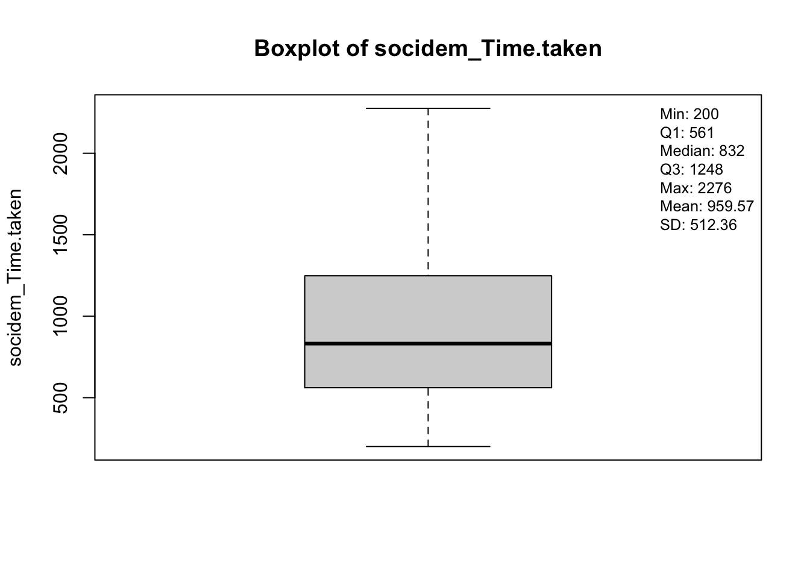
Boxplot for: socidem_Time.taken
Min Q1 Median Q3 Max
200 561 832 1248 2276
Mean: 959.57
SD: 512.36 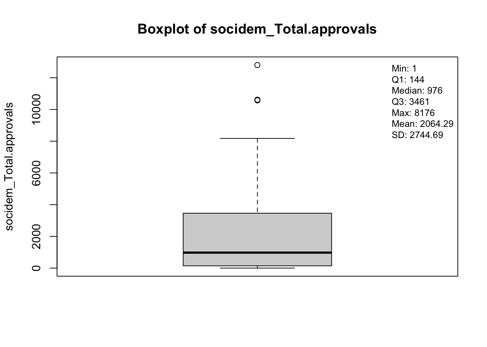
Boxplot for: socidem_Total.approvals
Min Q1 Median Q3 Max
1 144 976 3461 8176
Mean: 2064.29
SD: 2744.69 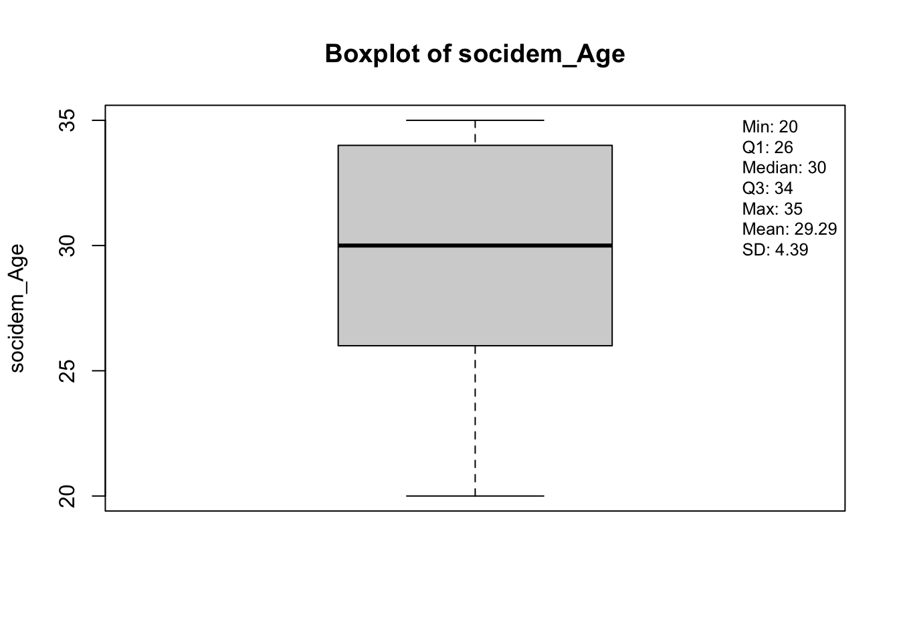
Boxplot for: socidem_Age
Min Q1 Median Q3 Max
20 26 30 34 35
Mean: 29.29
SD: 4.39 rm(socidem_vars); rm(socidem_df)6.2 paradata
para_visualTraps_vars <- str_subset(string = colnames(dat_ques), pattern = "^visualTrap")
para_visualTraps_vars [1] "visualTrapResponse" "visualTrap_Planets_response"
[3] "visualTrap_Planets_responseLabel" "visualTrap_Planets_correct"
[5] "visualTrap_Planets_rtMs" "visualTrap_Collision_response"
[7] "visualTrap_Collision_responseLabel" "visualTrap_Collision_correct"
[9] "visualTrap_Collision_rtMs" "visualTrap_CafeWall_response"
[11] "visualTrap_CafeWall_responseLabel" "visualTrap_CafeWall_correct"
[13] "visualTrap_CafeWall_rtMs" "visualTrap_Circles_response"
[15] "visualTrap_Circles_responseLabel" "visualTrap_Circles_correct"
[17] "visualTrap_Circles_rtMs" "visualTrap_Lines_response"
[19] "visualTrap_Lines_responseLabel" "visualTrap_Lines_correct"
[21] "visualTrap_Lines_rtMs" "visualTrap_Robot_response"
[23] "visualTrap_Robot_responseLabel" "visualTrap_Robot_correct"
[25] "visualTrap_Robot_rtMs" "visualTrap_order" para_visualTraps_vars_df <- dat_ques %>%
select(all_of(para_visualTraps_vars))
para_visualTraps_overview <- tibble(
variable = names(para_visualTraps_vars_df),
class = purrr::map_chr(para_visualTraps_vars_df, ~ paste(class(.x), collapse = "/")),
n = nrow(para_visualTraps_vars_df),
n_missing = purrr::map_int(para_visualTraps_vars_df, ~ sum(is.na(.x))),
n_unique = purrr::map_int(para_visualTraps_vars_df, ~ dplyr::n_distinct(.x, na.rm = TRUE))
) %>%
mutate(
missing_pct = round(100 * n_missing / n, 2)
)
para_visualTrap_descriptives <- purrr::map_dfr(para_visualTraps_vars, function(v) {
x <- para_visualTraps_vars_df[[v]]
if (is.numeric(x)) {
n_non_missing <- sum(!is.na(x))
tibble(
variable = v,
type = "numeric",
mean = if (n_non_missing == 0) NA_real_ else mean(x, na.rm = TRUE),
sd = if (n_non_missing <= 1) NA_real_ else sd(x, na.rm = TRUE),
median = if (n_non_missing == 0) NA_real_ else median(x, na.rm = TRUE),
min = if (n_non_missing == 0) NA_real_ else min(x, na.rm = TRUE),
max = if (n_non_missing == 0) NA_real_ else max(x, na.rm = TRUE),
top_levels = NA_character_
)
} else {
x_chr <- as.character(x)
x_chr[x_chr == ""] <- NA_character_
tab <- sort(table(x_chr, useNA = "no"), decreasing = TRUE)
k <- min(5, length(tab))
tibble(
variable = v,
type = "categorical_or_text",
mean = NA_real_,
sd = NA_real_,
median = NA_real_,
min = NA_real_,
max = NA_real_,
top_levels = if (k == 0) {
NA_character_
} else {
paste0(names(tab)[seq_len(k)], " (", as.integer(tab[seq_len(k)]), ")", collapse = "; ")
}
)
}
})
para_visualTraps_table <- para_visualTraps_overview %>%
left_join(para_visualTrap_descriptives, by = "variable")
DT::datatable(data = para_visualTraps_table)## factor vars:
factor_vars <- as.character(para_visualTraps_table$variable[para_visualTraps_table$class == "factor"])
for (var_name in factor_vars) {
cat("\nTable for:", var_name, "\n")
tab <- table(para_visualTraps_vars_df[[var_name]], useNA = "ifany")
pct <- prop.table(tab) * 100
print(cbind(Frequency = tab, Percentage = round(pct, 1)))
}
Table for: visualTrapResponse
Frequency Percentage
1 17 24.6
2 28 40.6
3 23 33.3
4 1 1.4
Table for: visualTrap_Planets_response
Frequency Percentage
1 1 1.4
2 65 94.2
3 2 2.9
4 1 1.4
Table for: visualTrap_Collision_response
Frequency Percentage
1 58 84.1
2 7 10.1
3 3 4.3
4 1 1.4
Table for: visualTrap_CafeWall_response
Frequency Percentage
1 3 4.3
3 59 85.5
4 7 10.1
Table for: visualTrap_Circles_response
Frequency Percentage
2 66 95.7
3 2 2.9
4 1 1.4
Table for: visualTrap_Lines_response
Frequency Percentage
1 67 97.1
2 1 1.4
3 1 1.4
Table for: visualTrap_Robot_response
Frequency Percentage
1 1 1.4
2 14 20.3
3 54 78.3## numeric vars:
numeric_vars <- as.character(para_visualTraps_table$variable[para_visualTraps_table$class %in% c("numeric", "integer")])
for (var_name in numeric_vars) {
if (var_name %in% names(para_visualTraps_vars_df)) {
x <- para_visualTraps_vars_df[[var_name]]
x <- x[!is.na(x)]
stats <- boxplot.stats(x)$stats
names(stats) <- c("Min", "Q1", "Median", "Q3", "Max")
mean_x <- mean(x)
sd_x <- sd(x)
boxplot(
x,
main = paste("Boxplot of", var_name),
ylab = var_name
)
legend(
"topright",
legend = c(
paste(names(stats), round(stats, 2), sep = ": "),
paste("Mean:", round(mean_x, 2)),
paste("SD:", round(sd_x, 2))
),
bty = "n",
cex = 0.8
)
cat("\nBoxplot for:", var_name, "\n")
print(stats)
cat("Mean:", round(mean_x, 2), "\n")
cat("SD:", round(sd_x, 2), "\n")
}
}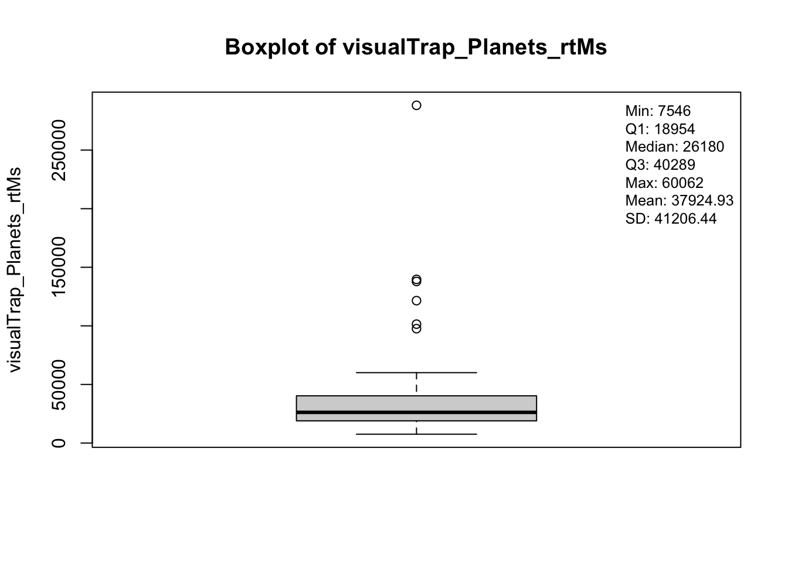
Boxplot for: visualTrap_Planets_rtMs
Min Q1 Median Q3 Max
7546 18954 26180 40289 60062
Mean: 37924.93
SD: 41206.44 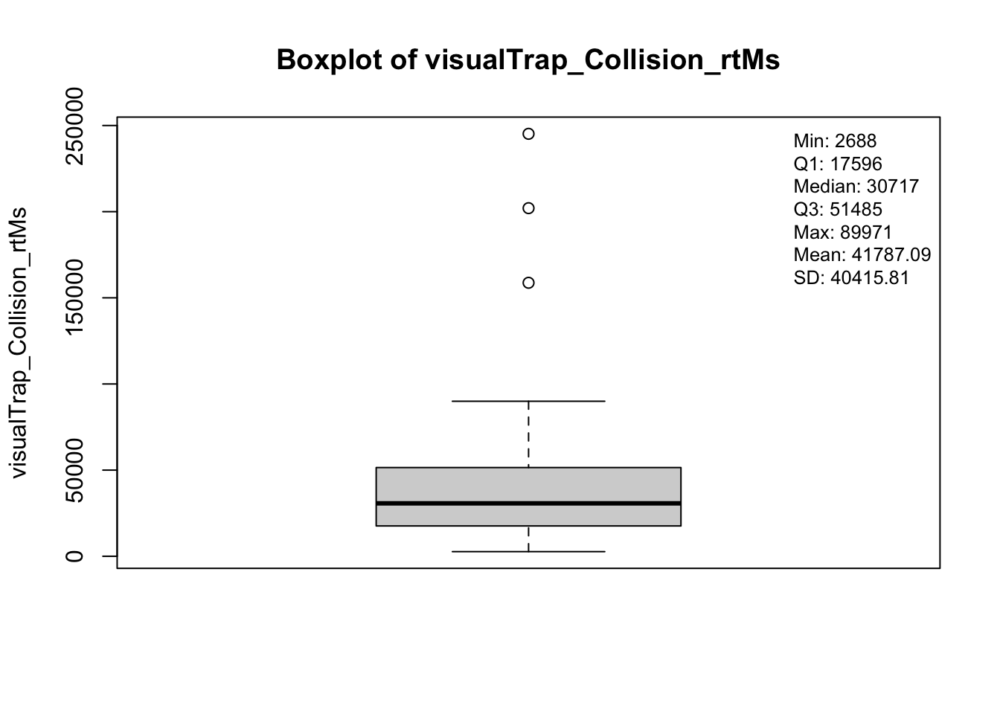
Boxplot for: visualTrap_Collision_rtMs
Min Q1 Median Q3 Max
2688 17596 30717 51485 89971
Mean: 41787.09
SD: 40415.81 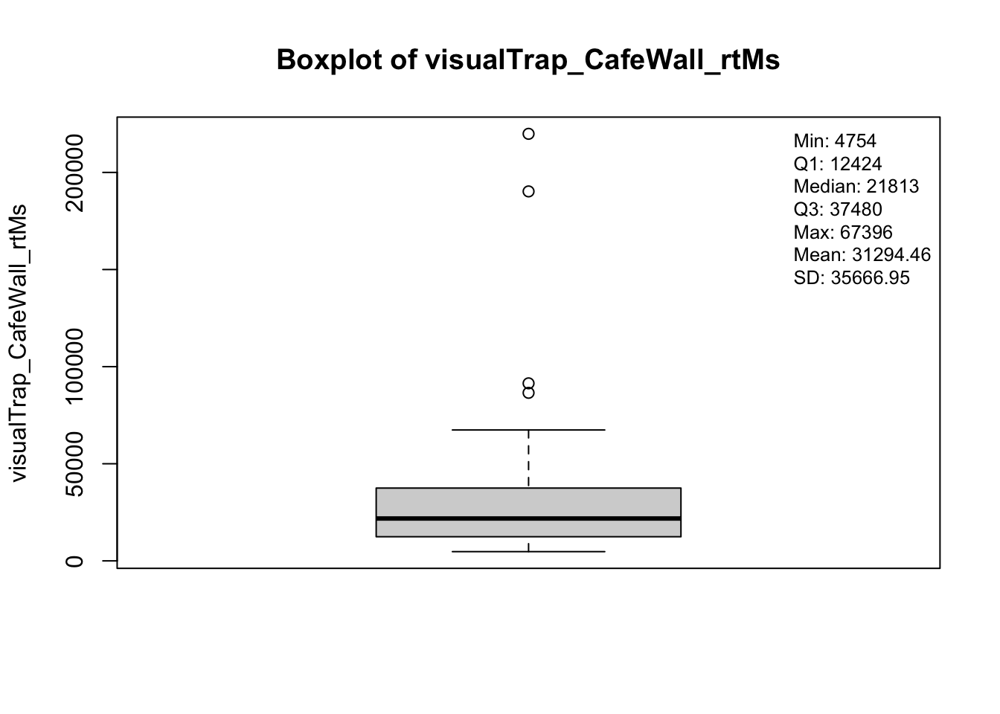
Boxplot for: visualTrap_CafeWall_rtMs
Min Q1 Median Q3 Max
4754 12424 21813 37480 67396
Mean: 31294.46
SD: 35666.95 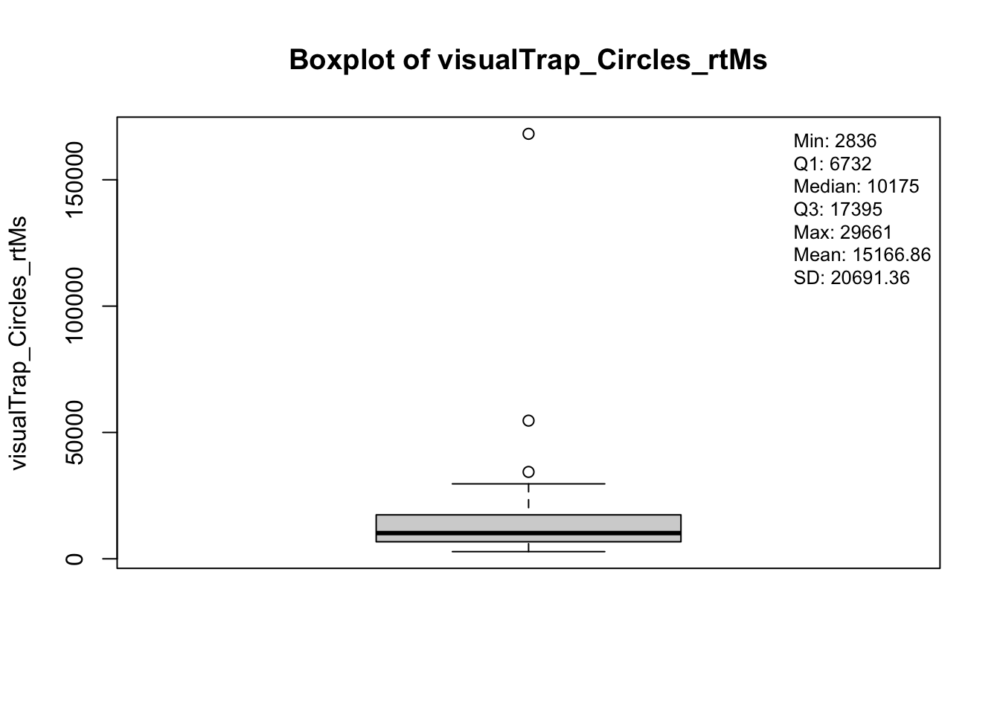
Boxplot for: visualTrap_Circles_rtMs
Min Q1 Median Q3 Max
2836 6732 10175 17395 29661
Mean: 15166.86
SD: 20691.36 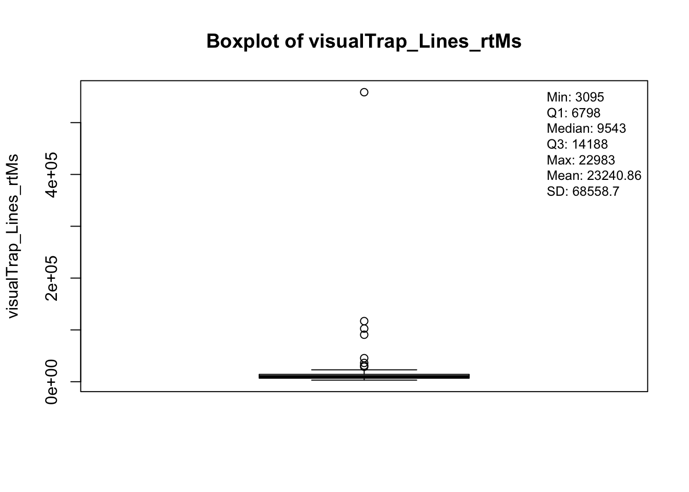
Boxplot for: visualTrap_Lines_rtMs
Min Q1 Median Q3 Max
3095 6798 9543 14188 22983
Mean: 23240.86
SD: 68558.7 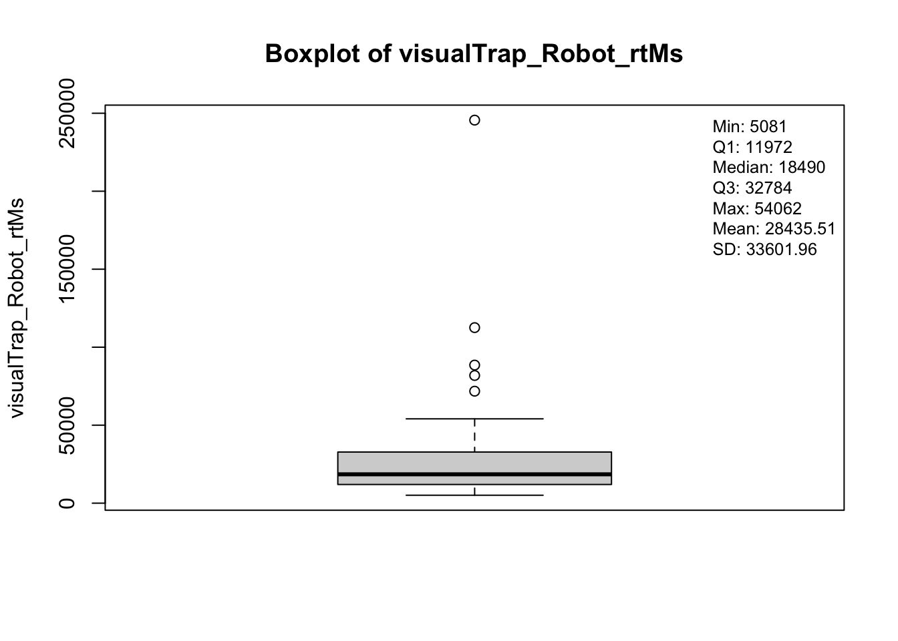
Boxplot for: visualTrap_Robot_rtMs
Min Q1 Median Q3 Max
5081 11972 18490 32784 54062
Mean: 28435.51
SD: 33601.96 rm(para_visualTraps_vars); rm(para_visualTraps_vars_df)for static paradata:
para_statics_vars <- str_subset(string = colnames(dat_ques), pattern = "^para")
para_statics_vars [1] "para_countclicks"
[2] "para_static_userAgent"
[3] "para_static_platform"
[4] "para_static_language"
[5] "para_static_languages"
[6] "para_static_cookieEnabled"
[7] "para_static_online"
[8] "para_static_webdriver"
[9] "para_static_hardwareConcurrency"
[10] "para_static_deviceMemory"
[11] "para_static_maxTouchPoints"
[12] "para_static_screen_width"
[13] "para_static_screen_height"
[14] "para_static_screen_availWidth"
[15] "para_static_screen_availHeight"
[16] "para_static_screen_colorDepth"
[17] "para_static_screen_pixelDepth"
[18] "para_static_viewport_innerWidth"
[19] "para_static_viewport_outerWidth"
[20] "para_static_viewport_outerHeight"
[21] "para_static_viewport_devicePixelRatio"
[22] "para_static_page_url"
[23] "para_static_page_hostname"
[24] "para_static_page_pathname"
[25] "para_static_page_protocol"
[26] "para_static_page_referrer"
[27] "para_static_page_title"
[28] "para_static_locale_timezone"
[29] "para_static_locale_timezoneOffset"
[30] "para_static_network_effectiveType"
[31] "para_static_network_downlink"
[32] "para_static_network_rtt"
[33] "para_static_network_saveData"
[34] "para_static_mediaQueries_prefersDarkScheme"
[35] "para_static_mediaQueries_prefersReducedMotion"
[36] "para_static_mediaQueries_prefersReducedTransparency"
[37] "para_static_mediaQueries_prefersContrastMore"
[38] "para_static_mediaQueries_pointerCoarse"
[39] "para_static_mediaQueries_pointerFine"
[40] "para_static_mediaQueries_hover"
[41] "para_static_features_localStorage"
[42] "para_static_features_sessionStorage"
[43] "para_static_features_indexedDB"
[44] "para_static_features_serviceWorker"
[45] "para_static_features_bluetooth"
[46] "para_static_features_usb"
[47] "para_static_features_clipboard"
[48] "para_static_features_mediaDevices"
[49] "para_static_features_permissions"
[50] "para_static_features_storageManager"
[51] "para_static_features_visualViewport"
[52] "para_ip_ip"
[53] "para_ip_network"
[54] "para_ip_version"
[55] "para_ip_city"
[56] "para_ip_region"
[57] "para_ip_region_code"
[58] "para_ip_country"
[59] "para_ip_country_name"
[60] "para_ip_country_code"
[61] "para_ip_country_code_iso3"
[62] "para_ip_country_capital"
[63] "para_ip_country_tld"
[64] "para_ip_in_eu"
[65] "para_ip_postal"
[66] "para_ip_latitude"
[67] "para_ip_longitude"
[68] "para_ip_timezone"
[69] "para_ip_utc_offset"
[70] "para_ip_country_calling_code"
[71] "para_ip_currency"
[72] "para_ip_currency_name"
[73] "para_ip_languages"
[74] "para_ip_country_area"
[75] "para_ip_country_population"
[76] "para_ip_asn"
[77] "para_ip_org"
[78] "para_meta_startedAt"
[79] "para_static_viewport_innerHeight"
[80] "para_static_doNotTrack"
[81] "para_ip_continent_code" para_statics_vars_df <- dat_ques %>%
select(all_of(para_statics_vars))
para_static_overview <- tibble(
variable = names(para_statics_vars_df),
class = purrr::map_chr(para_statics_vars_df, ~ paste(class(.x), collapse = "/")),
n = nrow(para_statics_vars_df),
n_missing = purrr::map_int(para_statics_vars_df, ~ sum(is.na(.x))),
n_unique = purrr::map_int(para_statics_vars_df, ~ dplyr::n_distinct(.x, na.rm = TRUE))
) %>%
mutate(
missing_pct = round(100 * n_missing / n, 2)
)
para_static_descriptives <- purrr::map_dfr(para_statics_vars, function(v) {
x <- para_statics_vars_df[[v]]
if (is.numeric(x)) {
n_non_missing <- sum(!is.na(x))
tibble(
variable = v,
type = "numeric",
mean = if (n_non_missing == 0) NA_real_ else mean(x, na.rm = TRUE),
sd = if (n_non_missing <= 1) NA_real_ else sd(x, na.rm = TRUE),
median = if (n_non_missing == 0) NA_real_ else median(x, na.rm = TRUE),
min = if (n_non_missing == 0) NA_real_ else min(x, na.rm = TRUE),
max = if (n_non_missing == 0) NA_real_ else max(x, na.rm = TRUE),
top_levels = NA_character_
)
} else {
x_chr <- as.character(x)
x_chr[x_chr == ""] <- NA_character_
tab <- sort(table(x_chr, useNA = "no"), decreasing = TRUE)
k <- min(5, length(tab))
tibble(
variable = v,
type = "categorical_or_text",
mean = NA_real_,
sd = NA_real_,
median = NA_real_,
min = NA_real_,
max = NA_real_,
top_levels = if (k == 0) {
NA_character_
} else {
paste0(names(tab)[seq_len(k)], " (", as.integer(tab[seq_len(k)]), ")", collapse = "; ")
}
)
}
})
para_static_table <- para_static_overview %>%
left_join(para_static_descriptives, by = "variable")
DT::datatable(data = para_static_table)rm(para_statics_vars); rm(para_statics_vars_df)7 Identify potential bots
visualtrap_rt_vars <- str_subset(
string = colnames(dat_ques),
pattern = "^visualTrap_.*_rtMs$"
)
visualtrap_items <- stringr::str_remove(visualtrap_rt_vars, "_rtMs$")
visualtrap_correct_vars <- paste0(visualtrap_items, "_correct")
visualtrap_pairs <- tibble(
item = visualtrap_items,
rt_var = visualtrap_rt_vars,
correct_var = visualtrap_correct_vars
) %>%
filter(correct_var %in% colnames(dat_ques))
parse_correct_binary <- function(x) {
x_chr <- tolower(trimws(as.character(x)))
dplyr::case_when(
x_chr %in% c("1", "true", "t", "yes", "y", "correct", "right") ~ 1,
x_chr %in% c("0", "false", "f", "no", "n", "incorrect", "wrong") ~ 0,
TRUE ~ NA_real_
)
}
visualtrap_rt_ttest <- purrr::map_dfr(seq_len(nrow(visualtrap_pairs)), function(i) {
item_name <- visualtrap_pairs$item[[i]]
rt_name <- visualtrap_pairs$rt_var[[i]]
correct_name <- visualtrap_pairs$correct_var[[i]]
correct_bin_all <- parse_correct_binary(dat_ques[[correct_name]])
n_correct_all <- sum(correct_bin_all == 1, na.rm = TRUE)
n_wrong_all <- sum(correct_bin_all == 0, na.rm = TRUE)
n_correct_non_missing <- n_correct_all + n_wrong_all
rt_all <- suppressWarnings(as.numeric(dat_ques[[rt_name]]))
item_df <- tibble(
rt_ms = rt_all,
correct_bin = correct_bin_all
) %>%
filter(!is.na(rt_ms), !is.na(correct_bin)) %>%
mutate(group = factor(ifelse(correct_bin == 1, "right", "wrong"), levels = c("wrong", "right")))
n_right_rt <- sum(item_df$group == "right")
n_wrong_rt <- sum(item_df$group == "wrong")
mean_right <- if (n_right_rt > 0) mean(item_df$rt_ms[item_df$group == "right"], na.rm = TRUE) else NA_real_
mean_wrong <- if (n_wrong_rt > 0) mean(item_df$rt_ms[item_df$group == "wrong"], na.rm = TRUE) else NA_real_
sd_right <- if (n_right_rt > 1) sd(item_df$rt_ms[item_df$group == "right"], na.rm = TRUE) else NA_real_
sd_wrong <- if (n_wrong_rt > 1) sd(item_df$rt_ms[item_df$group == "wrong"], na.rm = TRUE) else NA_real_
t_out <- tryCatch(
{
if (n_right_rt >= 2 && n_wrong_rt >= 2) {
t.test(rt_ms ~ group, data = item_df)
} else {
NULL
}
},
error = function(e) NULL
)
pooled_sd <- if (!is.na(sd_right) && !is.na(sd_wrong) && (n_right_rt + n_wrong_rt - 2) > 0) {
sqrt(((n_right_rt - 1) * sd_right^2 + (n_wrong_rt - 1) * sd_wrong^2) / (n_right_rt + n_wrong_rt - 2))
} else {
NA_real_
}
cohen_d <- if (!is.na(pooled_sd) && pooled_sd > 0) {
(mean_right - mean_wrong) / pooled_sd
} else {
NA_real_
}
hedges_g <- if (!is.na(cohen_d) && (n_right_rt + n_wrong_rt) > 3) {
cohen_d * (1 - (3 / (4 * (n_right_rt + n_wrong_rt) - 9)))
} else {
NA_real_
}
tibble(
item = item_name,
correct_var = correct_name,
rt_var = rt_name,
n_correct_non_missing = n_correct_non_missing,
n_right = n_correct_all,
n_wrong = n_wrong_all,
prop_right = if (n_correct_non_missing > 0) n_correct_all / n_correct_non_missing else NA_real_,
prop_wrong = if (n_correct_non_missing > 0) n_wrong_all / n_correct_non_missing else NA_real_,
n_rt_ttest = nrow(item_df),
n_right_rt = n_right_rt,
n_wrong_rt = n_wrong_rt,
mean_rt_right = mean_right,
sd_rt_right = sd_right,
mean_rt_wrong = mean_wrong,
sd_rt_wrong = sd_wrong,
mean_diff_right_minus_wrong = mean_right - mean_wrong,
t_statistic = if (!is.null(t_out)) unname(t_out$statistic) else NA_real_,
df = if (!is.null(t_out)) unname(t_out$parameter) else NA_real_,
p_value = if (!is.null(t_out)) t_out$p.value else NA_real_,
conf_low = if (!is.null(t_out)) t_out$conf.int[[1]] else NA_real_,
conf_high = if (!is.null(t_out)) t_out$conf.int[[2]] else NA_real_,
cohen_d = cohen_d,
hedges_g = hedges_g
)
}) %>%
mutate(
across(c(prop_right, prop_wrong), ~ round(.x, 3)),
across(c(mean_rt_right, sd_rt_right, mean_rt_wrong, sd_rt_wrong, mean_diff_right_minus_wrong), ~ round(.x, 2)),
across(c(t_statistic, df, cohen_d, hedges_g), ~ round(.x, 3)),
p_value = round(p_value, 4),
across(c(conf_low, conf_high), ~ round(.x, 2))
)
visualtrap_rt_ttest# A tibble: 6 × 23
item correct_var rt_var n_correct_non_missing n_right n_wrong prop_right
<chr> <chr> <chr> <int> <int> <int> <dbl>
1 visualTra… visualTrap… visua… 69 65 4 0.942
2 visualTra… visualTrap… visua… 69 58 11 0.841
3 visualTra… visualTrap… visua… 69 59 10 0.855
4 visualTra… visualTrap… visua… 69 66 3 0.957
5 visualTra… visualTrap… visua… 69 67 2 0.971
6 visualTra… visualTrap… visua… 69 54 15 0.783
# ℹ 16 more variables: prop_wrong <dbl>, n_rt_ttest <int>, n_right_rt <int>,
# n_wrong_rt <int>, mean_rt_right <dbl>, sd_rt_right <dbl>,
# mean_rt_wrong <dbl>, sd_rt_wrong <dbl>, mean_diff_right_minus_wrong <dbl>,
# t_statistic <dbl>, df <dbl>, p_value <dbl>, conf_low <dbl>,
# conf_high <dbl>, cohen_d <dbl>, hedges_g <dbl>DT::datatable(
visualtrap_rt_ttest,
caption = "Visual-trap item analysis: right vs wrong reaction times (Welch t-test + effect sizes)",
options = list(pageLength = 10, scrollX = TRUE)
)parse_bool <- function(x) {
x_chr <- tolower(trimws(as.character(x)))
dplyr::case_when(
x_chr %in% c("1", "true", "t", "yes", "y") ~ 1,
x_chr %in% c("0", "false", "f", "no", "n") ~ 0,
TRUE ~ NA_real_
)
}
safe_num <- function(x) suppressWarnings(as.numeric(as.character(x)))
vt_correct_vars <- str_subset(colnames(dat_ques), "^visualTrap_.*_correct$")
vt_rt_vars <- str_subset(colnames(dat_ques), "^visualTrap_.*_rtMs$")
vt_correct_mat <- dat_ques %>%
select(all_of(vt_correct_vars)) %>%
mutate(across(everything(), parse_bool))
vt_rt_mat <- dat_ques %>%
select(all_of(vt_rt_vars)) %>%
mutate(across(everything(), safe_num))
# IER / straightlining indicator from attributes scale
attr_cols <- str_subset(colnames(dat_ques), "^attributesFutureSociety-")
attr_mat <- dat_ques %>%
select(all_of(attr_cols)) %>%
mutate(across(everything(), safe_num))
attr_answered_count <- attr_mat %>%
transmute(attr_answered_count = rowSums(!is.na(across(everything())))) %>%
pull(attr_answered_count)
attr_response_sd <- attr_mat %>%
transmute(attr_response_sd = apply(
across(everything()),
1,
function(x) {
x <- as.numeric(x)
if (sum(!is.na(x)) < 2) return(NA_real_)
stats::sd(x, na.rm = TRUE)
}
)) %>%
pull(attr_response_sd)
vt_wrong_count <- vt_correct_mat %>%
mutate(across(everything(), ~ ifelse(.x == 0, 1, 0))) %>%
transmute(vt_wrong_count = rowSums(across(everything()), na.rm = TRUE)) %>%
pull(vt_wrong_count)
vt_answered_count <- vt_correct_mat %>%
transmute(vt_answered_count = rowSums(!is.na(across(everything())))) %>%
pull(vt_answered_count)
vt_correct_count <- vt_correct_mat %>%
transmute(vt_correct_count = rowSums(across(everything()), na.rm = TRUE)) %>%
pull(vt_correct_count)
vt_prop_correct <- ifelse(vt_answered_count > 0, vt_correct_count / vt_answered_count, NA_real_)
vt_mean_rt <- vt_rt_mat %>%
transmute(vt_mean_rt = rowMeans(across(everything()), na.rm = TRUE)) %>%
pull(vt_mean_rt)
vt_mean_rt_p05 <- quantile(vt_mean_rt, probs = 0.05, na.rm = TRUE)
vt_mean_rt_p95 <- quantile(vt_mean_rt, probs = 0.95, na.rm = TRUE)
vt_fast_count <- vt_rt_mat %>%
mutate(across(everything(), ~ ifelse(!is.na(.x) & .x < vt_mean_rt_p05, 1, 0))) %>%
transmute(vt_fast_count = rowSums(across(everything()), na.rm = TRUE)) %>%
pull(vt_fast_count)
vt_slow_count <- vt_rt_mat %>%
mutate(across(everything(), ~ ifelse(!is.na(.x) & .x > vt_mean_rt_p95, 1, 0))) %>%
transmute(vt_slow_count = rowSums(across(everything()), na.rm = TRUE)) %>%
pull(vt_slow_count)
webdriver_flag <- parse_bool(dat_ques$para_static_webdriver)
honeypot_flag <- parse_bool(dat_ques$hp_exclusionCriteria)
duration_seconds <- safe_num(dat_ques$duration_seconds)
duration_p05 <- quantile(duration_seconds, probs = 0.05, na.rm = TRUE)
duration_p95 <- quantile(duration_seconds, probs = 0.95, na.rm = TRUE)
very_fast_duration_flag <- ifelse(!is.na(duration_seconds) & duration_seconds < duration_p05, 1, 0)
very_slow_duration_flag <- ifelse(!is.na(duration_seconds) & duration_seconds > duration_p95, 1, 0)
events_by_pid <- dat_para_events %>%
mutate(
event_type_norm = tolower(as.character(event_type)),
clipboard_type_norm = tolower(as.character(clipboard_type)),
key_interval_ms = safe_num(key_interval_ms),
clipboard_length = safe_num(clipboard_length)
) %>%
group_by(PROLIFIC_PID) %>%
summarise(
n_events = n(),
n_copy = sum(event_type_norm == "copy" | (event_type_norm == "clipboard" & clipboard_type_norm == "copy"), na.rm = TRUE),
n_paste = sum(event_type_norm == "paste" | (event_type_norm == "clipboard" & clipboard_type_norm == "paste"), na.rm = TRUE),
n_mouse = sum(event_type_norm %in% c("mousemove", "mouse"), na.rm = TRUE),
n_scroll = sum(event_type_norm == "scroll", na.rm = TRUE),
n_key_intervals = sum(!is.na(key_interval_ms)),
key_interval_mean = mean(key_interval_ms, na.rm = TRUE),
key_interval_sd = sd(key_interval_ms, na.rm = TRUE),
clipboard_total_chars = sum(clipboard_length, na.rm = TRUE),
.groups = "drop"
)
defocus_by_pid <- dat_para_defocus %>%
mutate(durationblur = safe_num(durationblur)) %>%
group_by(PROLIFIC_PID) %>%
summarise(
defocus_n = n(),
defocus_total_ms = sum(durationblur, na.rm = TRUE),
defocus_mean_ms = mean(durationblur, na.rm = TRUE),
.groups = "drop"
)
bot_df <- dat_ques %>%
select(PROLIFIC_PID, result_id, duration_seconds = duration_seconds) %>%
mutate(
duration_seconds = safe_num(duration_seconds),
vt_wrong_count = vt_wrong_count,
vt_answered_count = vt_answered_count,
vt_correct_count = vt_correct_count,
vt_prop_correct = vt_prop_correct,
vt_mean_rt = vt_mean_rt,
vt_fast_count = vt_fast_count,
vt_slow_count = vt_slow_count,
attr_answered_count = attr_answered_count,
attr_response_sd = attr_response_sd,
webdriver_flag = webdriver_flag,
honeypot_flag = honeypot_flag,
very_fast_duration_flag = very_fast_duration_flag,
very_slow_duration_flag = very_slow_duration_flag
) %>%
left_join(events_by_pid, by = "PROLIFIC_PID") %>%
left_join(defocus_by_pid, by = "PROLIFIC_PID") %>%
mutate(
across(c(n_events, n_copy, n_paste, n_mouse, n_scroll, n_key_intervals,
clipboard_total_chars, defocus_n, defocus_total_ms, defocus_mean_ms),
~ replace_na(.x, 0)),
key_interval_mean = ifelse(is.nan(key_interval_mean), NA_real_, key_interval_mean),
key_interval_sd = ifelse(is.nan(key_interval_sd), NA_real_, key_interval_sd)
)
vt_rt_p10 <- quantile(bot_df$vt_mean_rt, 0.10, na.rm = TRUE)
vt_rt_p90 <- quantile(bot_df$vt_mean_rt, 0.90, na.rm = TRUE)
paste_p95 <- quantile(bot_df$n_paste, 0.95, na.rm = TRUE)
attr_sd_p10 <- quantile(bot_df$attr_response_sd, 0.10, na.rm = TRUE)
bot_df <- bot_df %>%
mutate(
risk_webdriver = ifelse(webdriver_flag == 1, 1, 0),
risk_honeypot = ifelse(honeypot_flag == 1, 1, 0),
risk_many_wrong_visual = ifelse(vt_wrong_count >= 3, 1, 0),
risk_low_visual_accuracy = ifelse(!is.na(vt_prop_correct) & vt_prop_correct < 0.50, 1, 0),
risk_very_fast_visual_rt = ifelse(!is.na(vt_mean_rt) & vt_mean_rt < vt_rt_p10, 1, 0),
risk_very_slow_visual_rt = ifelse(!is.na(vt_mean_rt) & vt_mean_rt > vt_rt_p90, 1, 0),
risk_very_fast_duration = ifelse(very_fast_duration_flag == 1, 1, 0),
risk_high_paste = ifelse(!is.na(n_paste) & n_paste > paste_p95, 1, 0),
risk_low_mouse_events = ifelse(!is.na(n_mouse) & n_mouse <= 5, 1, 0),
risk_high_defocus = ifelse(!is.na(defocus_n) & defocus_n >= 5, 1, 0),
risk_low_attr_sd = ifelse(!is.na(attr_response_sd) & attr_response_sd <= attr_sd_p10, 1, 0),
bot_risk_score = risk_webdriver + risk_honeypot + risk_many_wrong_visual +
risk_low_visual_accuracy + risk_very_fast_visual_rt + risk_very_slow_visual_rt +
risk_very_fast_duration + risk_high_paste + risk_low_mouse_events + risk_high_defocus +
risk_low_attr_sd
)
risk_indicator_table <- bot_df %>%
summarise(
n = n(),
across(starts_with("risk_"), ~ mean(.x, na.rm = TRUE), .names = "{.col}_prop")
) %>%
pivot_longer(cols = starts_with("risk_"), names_to = "indicator", values_to = "proportion_flagged") %>%
mutate(proportion_flagged = round(proportion_flagged, 3)) %>%
arrange(desc(proportion_flagged))
risk_indicator_table# A tibble: 11 × 3
n indicator proportion_flagged
<int> <chr> <dbl>
1 69 risk_low_attr_sd_prop 0.145
2 69 risk_very_fast_visual_rt_prop 0.101
3 69 risk_very_slow_visual_rt_prop 0.101
4 69 risk_high_defocus_prop 0.087
5 69 risk_many_wrong_visual_prop 0.072
6 69 risk_low_visual_accuracy_prop 0.058
7 69 risk_very_fast_duration_prop 0.058
8 69 risk_high_paste_prop 0.058
9 69 risk_webdriver_prop 0
10 69 risk_honeypot_prop 0
11 69 risk_low_mouse_events_prop 0 bot_risk_score_dist <- bot_df %>%
count(bot_risk_score, name = "n") %>%
mutate(prop = round(n / sum(n), 3)) %>%
arrange(bot_risk_score)
bot_risk_score_dist# A tibble: 5 × 3
bot_risk_score n prop
<dbl> <int> <dbl>
1 0 42 0.609
2 1 11 0.159
3 2 13 0.188
4 3 2 0.029
5 4 1 0.014cluster_features <- bot_df %>%
select(
vt_wrong_count, vt_prop_correct, vt_mean_rt, vt_fast_count, vt_slow_count,
attr_response_sd,
duration_seconds, n_events, n_paste, n_mouse, n_scroll,
n_key_intervals, key_interval_mean, key_interval_sd,
defocus_n, defocus_total_ms, bot_risk_score
) %>%
mutate(across(everything(), ~ ifelse(is.infinite(.x), NA_real_, .x)))
# for (j in seq_len(ncol(cluster_features))) {
# med_j <- median(cluster_features[[j]], na.rm = TRUE)
# cluster_features[[j]][is.na(cluster_features[[j]])] <- med_j
# }
# robust NA handling: median impute per column (fallback to 0)
cluster_features_ready <- cluster_features %>%
mutate(across(everything(), ~ {
x <- as.numeric(.x)
x[is.infinite(x)] <- NA_real_
med <- suppressWarnings(stats::median(x, na.rm = TRUE))
if (!is.finite(med)) med <- 0
x[is.na(x)] <- med
x
}))
# drop zero-variance columns (would create NaN after scaling)
vars_zero_var <- names(cluster_features_ready)[
vapply(
cluster_features_ready,
function(x) {
s <- stats::sd(x, na.rm = TRUE)
is.na(s) || s == 0
},
logical(1)
)
]
vars_zero_var[1] "n_key_intervals" "key_interval_mean" "key_interval_sd" cluster_features_model <- cluster_features_ready
if (length(vars_zero_var) > 0) {
cluster_features_model <- cluster_features_model %>%
dplyr::select(-dplyr::all_of(vars_zero_var))
}
# scale and force any residual non-finite values to 0
cluster_features_scaled <- cluster_features_model %>%
scale(center = TRUE, scale = TRUE) %>%
as.data.frame()
cluster_features_scaled <- cluster_features_scaled %>%
mutate(across(everything(), ~ {
x <- as.numeric(.x)
x[!is.finite(x)] <- 0
x
}))
# clustering task
task <- mlr3cluster::TaskClust$new(
id = "bot_profile",
backend = cluster_features_scaled
)
# evaluate candidate k values
k_max <- min(6, nrow(cluster_features_scaled) - 1)
k_grid <- if (k_max >= 2) 2:k_max else 2
dmat <- dist(cluster_features_scaled)
k_eval <- purrr::map_dfr(k_grid, function(k) {
learner_k <- mlr3::lrn("clust.kmeans", centers = k, nstart = 30)
learner_k$train(task)
pred_k <- learner_k$predict(task)
cl <- as.integer(pred_k$partition)
sil <- tryCatch({
mean(cluster::silhouette(cl, dmat)[, "sil_width"])
}, error = function(e) NA_real_)
tibble::tibble(
k = k,
avg_silhouette = sil
)
})
k_eval# A tibble: 5 × 2
k avg_silhouette
<int> <dbl>
1 2 0.345
2 3 0.338
3 4 0.364
4 5 0.367
5 6 0.372# choose best k
best_k <- k_eval %>%
dplyr::filter(!is.na(avg_silhouette)) %>%
dplyr::arrange(dplyr::desc(avg_silhouette)) %>%
dplyr::slice(1) %>%
dplyr::pull(k)
if (length(best_k) == 0 || is.na(best_k)) best_k <- 3
# final model
learner_final <- mlr3::lrn("clust.kmeans", centers = best_k, nstart = 50)
learner_final$train(task)
pred_final <- learner_final$predict(task)
# attach cluster labels back to original data
bot_df <- bot_df %>%
dplyr::mutate(bot_cluster = factor(pred_final$partition))
# cluster summaries
cluster_profile <- bot_df %>%
dplyr::group_by(bot_cluster) %>%
dplyr::summarise(
n = dplyr::n(),
prop_sample = round(n / nrow(bot_df), 3),
mean_bot_risk_score = round(mean(bot_risk_score, na.rm = TRUE), 3),
mean_vt_prop_correct = round(mean(vt_prop_correct, na.rm = TRUE), 3),
mean_vt_mean_rt = round(mean(vt_mean_rt, na.rm = TRUE), 1),
mean_attr_response_sd = round(mean(attr_response_sd, na.rm = TRUE), 3),
mean_duration_seconds = round(mean(duration_seconds, na.rm = TRUE), 1),
mean_n_paste = round(mean(n_paste, na.rm = TRUE), 2),
mean_n_mouse = round(mean(n_mouse, na.rm = TRUE), 2),
mean_defocus_n = round(mean(defocus_n, na.rm = TRUE), 2),
prop_webdriver = round(mean(webdriver_flag == 1, na.rm = TRUE), 3),
prop_honeypot = round(mean(honeypot_flag == 1, na.rm = TRUE), 3),
.groups = "drop"
) %>%
dplyr::arrange(dplyr::desc(mean_bot_risk_score))
cluster_profile# A tibble: 6 × 13
bot_cluster n prop_sample mean_bot_risk_score mean_vt_prop_correct
<fct> <int> <dbl> <dbl> <dbl>
1 2 5 0.072 2.6 0.3
2 5 1 0.014 2 0.833
3 3 9 0.13 1.33 0.87
4 6 6 0.087 1.17 0.861
5 1 18 0.261 0.556 0.972
6 4 30 0.435 0.1 0.956
# ℹ 8 more variables: mean_vt_mean_rt <dbl>, mean_attr_response_sd <dbl>,
# mean_duration_seconds <dbl>, mean_n_paste <dbl>, mean_n_mouse <dbl>,
# mean_defocus_n <dbl>, prop_webdriver <dbl>, prop_honeypot <dbl># identify highest-risk cluster
high_risk_cluster <- cluster_profile %>%
dplyr::slice(1) %>%
dplyr::pull(bot_cluster)
suspected_bot_table <- bot_df %>%
dplyr::mutate(suspected_bot_cluster = ifelse(bot_cluster == high_risk_cluster, 1, 0)) %>%
dplyr::select(
PROLIFIC_PID, result_id, bot_cluster, suspected_bot_cluster, bot_risk_score,
vt_wrong_count, vt_prop_correct, vt_mean_rt, attr_response_sd, duration_seconds,
webdriver_flag, honeypot_flag, n_paste, n_mouse, defocus_n
) %>%
dplyr::arrange(dplyr::desc(suspected_bot_cluster), dplyr::desc(bot_risk_score), vt_prop_correct)
DT::datatable(
suspected_bot_table,
caption = paste0("Bot-risk profiling table (best k = ", best_k, ")"),
options = list(pageLength = 12, scrollX = TRUE)
)Interpetation:
cluster_profile# A tibble: 6 × 13
bot_cluster n prop_sample mean_bot_risk_score mean_vt_prop_correct
<fct> <int> <dbl> <dbl> <dbl>
1 2 5 0.072 2.6 0.3
2 5 1 0.014 2 0.833
3 3 9 0.13 1.33 0.87
4 6 6 0.087 1.17 0.861
5 1 18 0.261 0.556 0.972
6 4 30 0.435 0.1 0.956
# ℹ 8 more variables: mean_vt_mean_rt <dbl>, mean_attr_response_sd <dbl>,
# mean_duration_seconds <dbl>, mean_n_paste <dbl>, mean_n_mouse <dbl>,
# mean_defocus_n <dbl>, prop_webdriver <dbl>, prop_honeypot <dbl>Interpretation by cluster (ordered by concern): - Cluster 1 (n=5, 7.2%): highest concern
- risk=2.60 (highest), vt_correct=0.30 (very low), attr_sd=0.334 (very low)
- Pattern fits low-quality / likely IER, possibly suspicious responses. - Cluster 5 (n=1, 1.4%): anomaly case
- risk=2.00, moderate attr SD (0.707), decent visual accuracy (0.833)
- Single case; treat as individual outlier, not a stable subgroup. - Cluster 6 (n=9, 13.0%): moderate concern (slow responders)
- risk=1.33, vt_correct=0.87 (okay), very high RT (61742 ms), attr SD moderate (0.754)
- More like very slow/careful or distracted than clear bot pattern. - Cluster 2 (n=6, 8.7%): moderate concern
- risk=1.17, vt_correct=0.861, high RT (37262 ms), attr SD moderate-high (0.826)
- Could reflect slow/effortful respondents, not strong bot signal. - Cluster 4 (n=18, 26.1%): low concern
- risk=0.556, high visual accuracy (0.972), high attr SD (1.302)
- Looks like engaged human responding. - Cluster 3 (n=30, 43.5%): lowest concern / baseline majority
- risk=0.100, high accuracy (0.956), high attr SD (1.323)
- Most clearly normal-quality respondents.
# barplots of two extreme groups based on number of correctly answered visual traps:
tmp_pids_c1 <- suspected_bot_table$PROLIFIC_PID[suspected_bot_table$bot_cluster == 1]
tmp_pids_c1 [1] "5d845d15fbc5970001e821e0" "69afaa90fb69a6488ece26e4"
[3] "609f4c9fb80290b21c5e5265" "66ae0709d8dd8981a2d6ee04"
[5] "69cbeee63cec140ffaaeb8ba" "633c74ad6178784ed5b52104"
[7] "5b9e2f45f07414000105160b" "69d46a112c7ba62da0198176"
[9] "6679af725f681821b6bc1328" "69ced52e0c7bfe72777b1f89"
[11] "60f2a2b4932fed5326988e0f" "654dc6da0fc827b2e98ad492"
[13] "6743905b3105844d1c76e0b5" "6400d8e645e80091a53f9b21"
[15] "6994de516d0bfd8811558579" "62740f4f578f0114e649016d"
[17] "65ff0f25be498d4a99159934" "69ac80094c5494db959077d6"tmp <- rowSums(dat_ques[dat_ques$PROLIFIC_PID %in% tmp_pids_c1, str_subset(string = colnames(dat_ques), pattern = "^visual.*_correct$")])
barplot(table(tmp), main = "Cluster 1")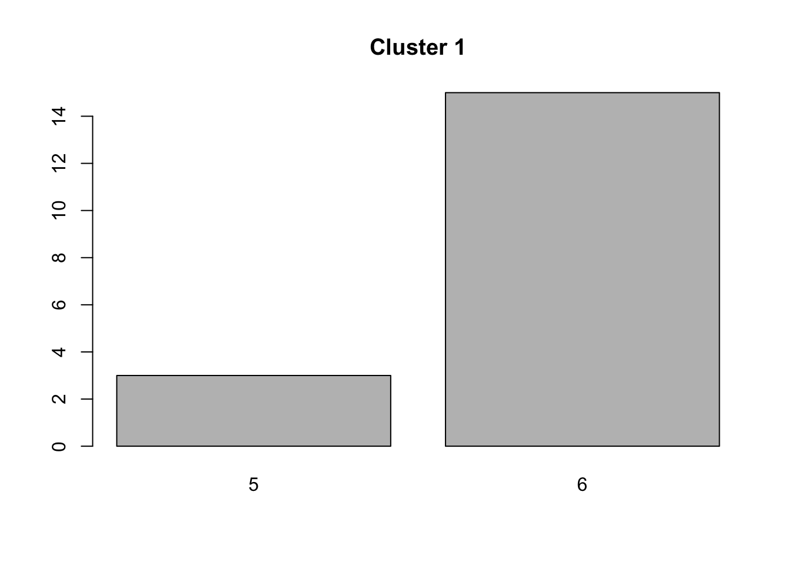
tmp_pids_notC1 <- suspected_bot_table$PROLIFIC_PID[suspected_bot_table$bot_cluster != 1]
tmp <- rowSums(dat_ques[dat_ques$PROLIFIC_PID %in% tmp_pids_notC1, str_subset(string = colnames(dat_ques), pattern = "^visual.*_correct$")])
barplot(table(tmp), main = "All other clusters")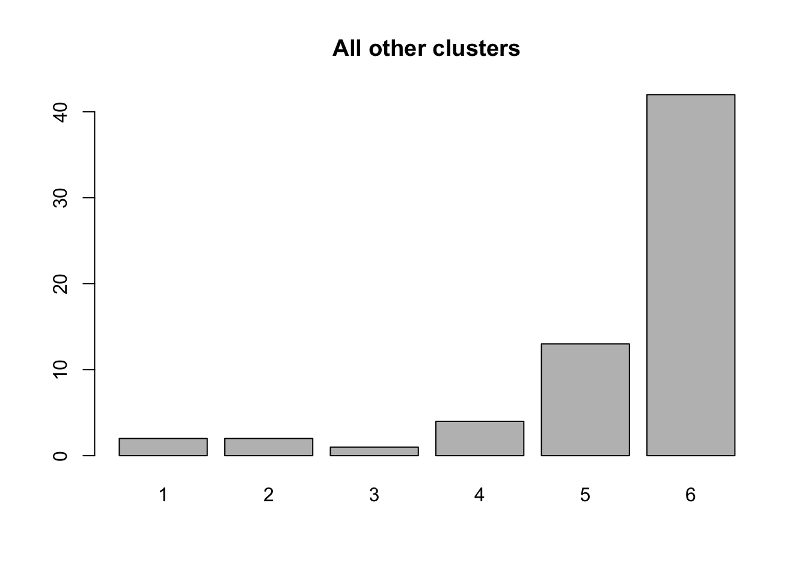
# t-tests of two extreme groups based on number of correctly answered visual traps:
# Build analysis frame
attr_cols <- str_subset(string = colnames(dat_ques), pattern = "^attributesFutureSociety-")
visual_correct_cols <- str_subset(string = colnames(dat_ques), pattern = "^visual.*_correct$")
ttest_df <- dat_ques %>%
mutate(
group_c1 = ifelse(PROLIFIC_PID %in% tmp_pids_c1, "Cluster1", "OtherClusters"),
duration_seconds_num = suppressWarnings(as.numeric(as.character(duration_seconds))),
attr_response_sd = apply(
select(., all_of(attr_cols)) %>% mutate(across(everything(), ~ suppressWarnings(as.numeric(as.character(.x))))),
1,
function(x) if (sum(!is.na(x)) < 2) NA_real_ else sd(x, na.rm = TRUE)
),
visual_correct_sum = rowSums(
select(., all_of(visual_correct_cols)) %>% mutate(across(everything(), ~ suppressWarnings(as.numeric(as.character(.x))))),
na.rm = TRUE
)
) %>%
filter(group_c1 %in% c("Cluster1", "OtherClusters"))
# Descriptives by group
ttest_df %>%
group_by(group_c1) %>%
summarise(
n = n(),
mean_duration = mean(duration_seconds_num, na.rm = TRUE),
sd_duration = sd(duration_seconds_num, na.rm = TRUE),
mean_attr_sd = mean(attr_response_sd, na.rm = TRUE),
sd_attr_sd = sd(attr_response_sd, na.rm = TRUE),
mean_visual_correct_sum = mean(visual_correct_sum, na.rm = TRUE),
.groups = "drop"
)# A tibble: 2 × 7
group_c1 n mean_duration sd_duration mean_attr_sd sd_attr_sd
<chr> <int> <dbl> <dbl> <dbl> <dbl>
1 Cluster1 18 477. 188. 1.30 0.598
2 OtherClusters 51 1083. 469. 1.07 0.652
# ℹ 1 more variable: mean_visual_correct_sum <dbl># t-test 1: duration mean (Cluster 1 vs others)
t_duration <- t.test(duration_seconds_num ~ group_c1, data = ttest_df)
t_duration
Welch Two Sample t-test
data: duration_seconds_num by group_c1
t = -7.6466, df = 65.733, p-value = 1.162e-10
alternative hypothesis: true difference in means between group Cluster1 and group OtherClusters is not equal to 0
95 percent confidence interval:
-764.0513 -447.6480
sample estimates:
mean in group Cluster1 mean in group OtherClusters
476.7778 1082.6275 # t-test 2: attributes response SD mean (Cluster 1 vs others)
t_attr_sd <- t.test(attr_response_sd ~ group_c1, data = ttest_df)
t_attr_sd
Welch Two Sample t-test
data: attr_response_sd by group_c1
t = 1.3836, df = 32.58, p-value = 0.1759
alternative hypothesis: true difference in means between group Cluster1 and group OtherClusters is not equal to 0
95 percent confidence interval:
-0.1097950 0.5758219
sample estimates:
mean in group Cluster1 mean in group OtherClusters
1.302297 1.069284 # Optional effect sizes (Cohen's d)
cohens_d <- function(x, g) {
x1 <- x[g == "Cluster1"]; x2 <- x[g == "OtherClusters"]
x1 <- x1[!is.na(x1)]; x2 <- x2[!is.na(x2)]
n1 <- length(x1); n2 <- length(x2)
s1 <- sd(x1); s2 <- sd(x2)
sp <- sqrt(((n1 - 1) * s1^2 + (n2 - 1) * s2^2) / (n1 + n2 - 2))
(mean(x1) - mean(x2)) / sp
}
d_duration <- cohens_d(ttest_df$duration_seconds_num, ttest_df$group_c1)
d_attr_sd <- cohens_d(ttest_df$attr_response_sd, ttest_df$group_c1)
d_duration[1] -1.457134d_attr_sd[1] 0.3650318# check copy & paste events of single respondent:
tmp_pids <- suspected_bot_table$PROLIFIC_PID[suspected_bot_table$bot_cluster == 5]
tmp_pids[1] "69cc2d26908022555935599a"dat_para_events[dat_para_events$PROLIFIC_PID %in% tmp_pids & dat_para_events$event_type %in% c("copy", "paste"), ]# A tibble: 19 × 22
PROLIFIC_PID result_id origin event_type event_index timestamp component
<chr> <chr> <chr> <chr> <int> <chr> <chr>
1 69cc2d2690802255… 15322 parad… copy 1 2026-04-… Greetings
2 69cc2d2690802255… 15322 parad… copy 2 2026-04-… Greetings
3 69cc2d2690802255… 15322 parad… copy 3 2026-04-… Scenario…
4 69cc2d2690802255… 15322 parad… copy 4 2026-04-… Scenario…
5 69cc2d2690802255… 15322 parad… copy 5 2026-04-… Scenario…
6 69cc2d2690802255… 15322 parad… copy 6 2026-04-… Scenario…
7 69cc2d2690802255… 15322 parad… copy 7 2026-04-… <NA>
8 69cc2d2690802255… 15322 parad… paste 8 2026-04-… <NA>
9 69cc2d2690802255… 15322 parad… paste 9 2026-04-… <NA>
10 69cc2d2690802255… 15322 parad… paste 10 2026-04-… <NA>
11 69cc2d2690802255… 15322 parad… paste 11 2026-04-… <NA>
12 69cc2d2690802255… 15322 parad… paste 12 2026-04-… <NA>
13 69cc2d2690802255… 15322 parad… copy 13 2026-04-… understa…
14 69cc2d2690802255… 15322 parad… paste 14 2026-04-… understa…
15 69cc2d2690802255… 15322 parad… paste 15 2026-04-… understa…
16 69cc2d2690802255… 15322 parad… paste 16 2026-04-… understa…
17 69cc2d2690802255… 15322 parad… paste 17 2026-04-… understa…
18 69cc2d2690802255… 15322 parad… copy 18 2026-04-… quesProt…
19 69cc2d2690802255… 15322 parad… copy 19 2026-04-… quesProt…
# ℹ 15 more variables: field <chr>, value <chr>, mouse_x <dbl>, mouse_y <dbl>,
# scroll_x <dbl>, scroll_y <dbl>, key_interval_ms <dbl>,
# clipboard_type <chr>, clipboard_text <chr>, clipboard_length <dbl>,
# target_tag <chr>, target_type <chr>, target_id <chr>, target_name <chr>,
# target_className <chr>8 Descriptive statistics - quality
8.1 clearity, bias
table(dat_ques$condition_FutureSociety)
aicentered anarchic futurist lawBased moderngreen primitivist
6 14 16 7 10 7
religious
8 # ---- Helper ----
safe_num <- function(x) suppressWarnings(as.numeric(as.character(x)))
# ---- Recode to numeric + labeled factors ----
clearbias_df <- dat_ques %>%
mutate(
clearUtopia_num = safe_num(clearUtopia),
biasUtopia_num = safe_num(biasUtopia),
clearUtopia_lab = factor(
clearUtopia_num,
levels = 1:4,
labels = c("Completely unclear", "Somewhat unclear",
"Somewhat clear", "Completely clear")
),
biasUtopia_lab = factor(
biasUtopia_num,
levels = 1:3,
labels = c("Opposed", "Neutral", "Supportive")
),
clear_followup_triggered = !is.na(clearUtopiatext) & nchar(trimws(as.character(clearUtopiatext))) > 0,
bias_followup_triggered = !is.na(biasUtopiatext) & nchar(trimws(as.character(biasUtopiatext))) > 0
)
# ---- Overall distributions ----
cat("\n--- Clarity (overall) ---\n")
--- Clarity (overall) ---tab_clear <- table(clearbias_df$clearUtopia_lab, useNA = "ifany")
print(cbind(Frequency = tab_clear, Percentage = round(prop.table(tab_clear) * 100, 1))) Frequency Percentage
Completely unclear 0 0.0
Somewhat unclear 0 0.0
Somewhat clear 27 39.1
Completely clear 41 59.4
<NA> 1 1.4cat("\n--- Bias (overall) ---\n")
--- Bias (overall) ---tab_bias <- table(clearbias_df$biasUtopia_lab, useNA = "ifany")
print(cbind(Frequency = tab_bias, Percentage = round(prop.table(tab_bias) * 100, 1))) Frequency Percentage
Opposed 1 1.4
Neutral 53 76.8
Supportive 14 20.3
<NA> 1 1.4cat("\n--- Follow-up trigger rates ---\n")
--- Follow-up trigger rates ---clearbias_df %>%
summarise(
n = n(),
n_clear_followup = sum(clear_followup_triggered, na.rm = TRUE),
pct_clear_followup = round(100 * mean(clear_followup_triggered, na.rm = TRUE), 1),
n_bias_followup = sum(bias_followup_triggered, na.rm = TRUE),
pct_bias_followup = round(100 * mean(bias_followup_triggered, na.rm = TRUE), 1)
) %>%
print()# A tibble: 1 × 5
n n_clear_followup pct_clear_followup n_bias_followup pct_bias_followup
<int> <int> <dbl> <int> <dbl>
1 69 0 0 16 23.2# ---- By condition: cross-tabs + means ----
clearbias_by_cond <- clearbias_df %>%
group_by(condition_FutureSociety) %>%
summarise(
n = n(),
mean_clear = round(mean(clearUtopia_num, na.rm = TRUE), 2),
sd_clear = round(sd(clearUtopia_num, na.rm = TRUE), 2),
pct_clear_high = round(100 * mean(clearUtopia_num >= 3, na.rm = TRUE), 1),
mean_bias = round(mean(biasUtopia_num, na.rm = TRUE), 2),
sd_bias = round(sd(biasUtopia_num, na.rm = TRUE), 2),
pct_neutral = round(100 * mean(biasUtopia_num == 2, na.rm = TRUE), 1),
.groups = "drop"
)
DT::datatable(
clearbias_by_cond,
caption = "Clarity and bias means by condition (clarity 1–4, bias 1–3 where 2 = neutral)",
options = list(pageLength = 10, scrollX = TRUE)
)# ---- Stacked bar plots: clarity by condition ----
clear_plot_df <- clearbias_df %>%
filter(!is.na(clearUtopia_lab), !is.na(condition_FutureSociety)) %>%
count(condition_FutureSociety, clearUtopia_lab) %>%
group_by(condition_FutureSociety) %>%
mutate(prop = n / sum(n)) %>%
ungroup()
ggplot(clear_plot_df,
aes(x = condition_FutureSociety, y = prop, fill = clearUtopia_lab)) +
geom_col() +
scale_y_continuous(labels = scales::percent_format(accuracy = 1)) +
labs(x = "Condition", y = "Proportion", fill = "Clarity",
title = "Perceived clarity by condition") +
theme_minimal() +
theme(axis.text.x = element_text(angle = 30, hjust = 1))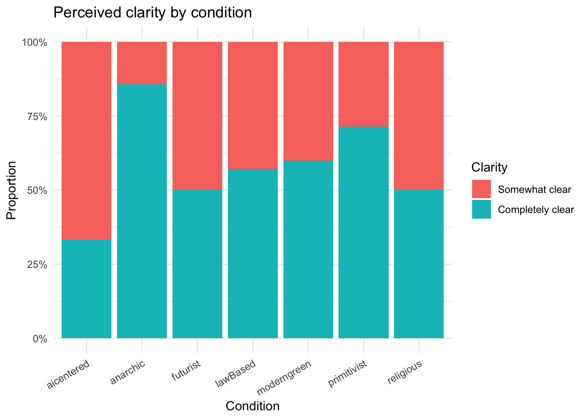
# ---- Stacked bar plots: bias by condition ----
bias_plot_df <- clearbias_df %>%
filter(!is.na(biasUtopia_lab), !is.na(condition_FutureSociety)) %>%
count(condition_FutureSociety, biasUtopia_lab) %>%
group_by(condition_FutureSociety) %>%
mutate(prop = n / sum(n)) %>%
ungroup()
ggplot(bias_plot_df,
aes(x = condition_FutureSociety, y = prop, fill = biasUtopia_lab)) +
geom_col() +
scale_y_continuous(labels = scales::percent_format(accuracy = 1)) +
labs(x = "Condition", y = "Proportion", fill = "Bias perception",
title = "Perceived bias by condition") +
theme_minimal() +
theme(axis.text.x = element_text(angle = 30, hjust = 1))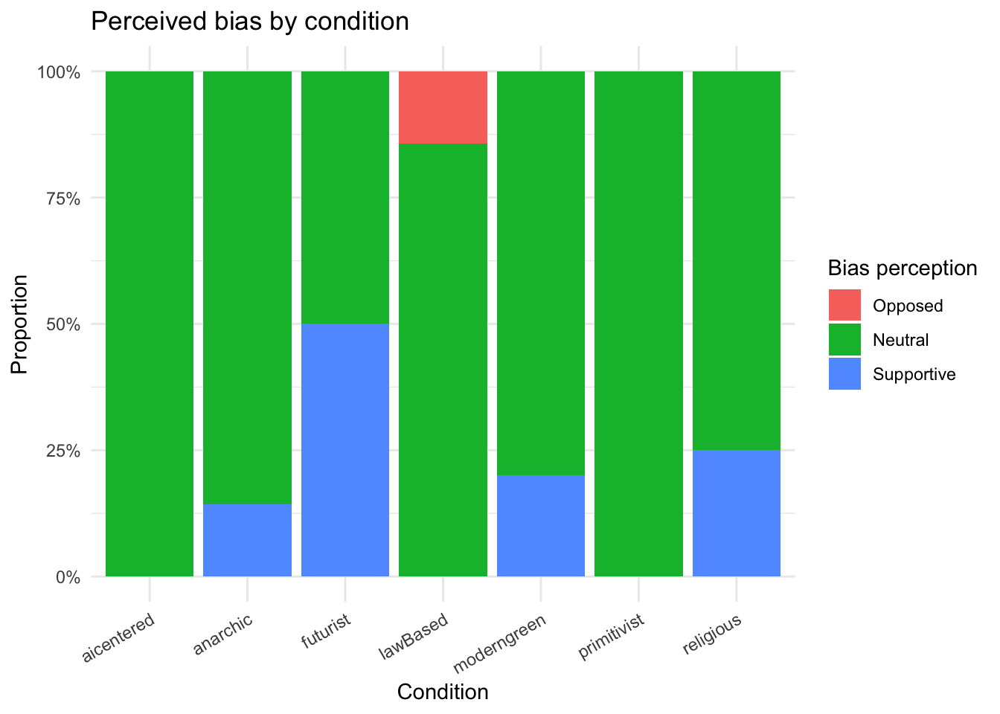
# ---- Inferential: does condition affect clarity / bias? ----
# Chi-square on raw response distributions
cat("\n--- Chi-square: clarity x condition ---\n")
--- Chi-square: clarity x condition ---print(chisq.test(table(clearbias_df$condition_FutureSociety, clearbias_df$clearUtopia_lab)))
Pearson's Chi-squared test
data: table(clearbias_df$condition_FutureSociety, clearbias_df$clearUtopia_lab)
X-squared = NaN, df = 18, p-value = NAcat("\n--- Chi-square: bias x condition ---\n")
--- Chi-square: bias x condition ---print(chisq.test(table(clearbias_df$condition_FutureSociety, clearbias_df$biasUtopia_lab)))
Pearson's Chi-squared test
data: table(clearbias_df$condition_FutureSociety, clearbias_df$biasUtopia_lab)
X-squared = 22.493, df = 12, p-value = 0.03235# Treat clarity as quasi-interval and run an ANOVA (sensitivity check)
anova_clear <- afex::aov_ez(
id = "PROLIFIC_PID",
dv = "clearUtopia_num",
between = "condition_FutureSociety",
data = clearbias_df %>% drop_na(clearUtopia_num, condition_FutureSociety)
)
summary(anova_clear)Anova Table (Type 3 tests)
Response: clearUtopia_num
num Df den Df MSE F ges Pr(>F)
condition_FutureSociety 6 61 0.23919 1.1769 0.10375 0.3306# ---- Inspect follow-up free-text answers ----
clearbias_followups <- clearbias_df %>%
filter(clear_followup_triggered | bias_followup_triggered) %>%
select(PROLIFIC_PID, condition_FutureSociety,
clearUtopia_lab, clearUtopiatext,
biasUtopia_lab, biasUtopiatext) %>%
mutate(
clear_chars = nchar(as.character(clearUtopiatext)),
bias_chars = nchar(as.character(biasUtopiatext))
)
DT::datatable(
clearbias_followups,
caption = "Participants who triggered clarity/bias follow-up text fields",
options = list(pageLength = 10, scrollX = TRUE)
)writexl::write_xlsx(x = clearbias_followups, path = file.path(output_root, "clearbias_followups.xlsx"))8.2 prototype assignment
# First, check what condition labels actually exist:
cat("Condition levels in data:\n")Condition levels in data:print(levels(dat_ques$condition_FutureSociety))[1] "aicentered" "anarchic" "futurist" "lawBased" "moderngreen"
[6] "primitivist" "religious" # or, if not a factor:
print(unique(dat_ques$condition_FutureSociety))[1] religious anarchic lawBased futurist moderngreen primitivist
[7] aicentered <NA>
7 Levels: aicentered anarchic futurist lawBased moderngreen ... religiouscondition_to_prototype <- c(
"futurist" = "futurist",
"aicentered" = "ai_centered",
"primitivist" = "primitivist_arcadian",
"moderngreen" = "modern_green",
"religious" = "religious_millennial",
"lawBased" = "institutional_law",
"anarchic" = "moral_commonwealth_anarchic"
)
prototype_levels <- c(
"futurist", "ai_centered", "primitivist_arcadian", "modern_green",
"religious_millennial", "institutional_law", "moral_commonwealth_anarchic"
)
# ---- Build assignment dataframe ----
proto_df <- dat_ques %>%
select(PROLIFIC_PID, condition_FutureSociety,
utopiaPrototypeAssignment,
protoConfidenceRadio,
protoReasonText) %>%
mutate(
chosen_prototype = factor(as.character(utopiaPrototypeAssignment),
levels = prototype_levels),
correct_prototype = factor(
unname(condition_to_prototype[as.character(condition_FutureSociety)]),
levels = prototype_levels
),
proto_correct = as.integer(as.character(chosen_prototype) ==
as.character(correct_prototype)),
confidence = suppressWarnings(as.numeric(as.character(protoConfidenceRadio))),
proto_reason_provided = !is.na(protoReasonText) &
nchar(trimws(as.character(protoReasonText))) > 0
)
# ---- Sanity check: confirm every condition resolved to a prototype ----
mapping_check <- proto_df %>%
count(condition_FutureSociety, correct_prototype, name = "n") %>%
arrange(condition_FutureSociety)
mapping_check# A tibble: 8 × 3
condition_FutureSociety correct_prototype n
<fct> <fct> <int>
1 aicentered ai_centered 6
2 anarchic moral_commonwealth_anarchic 14
3 futurist futurist 16
4 lawBased institutional_law 7
5 moderngreen modern_green 10
6 primitivist primitivist_arcadian 7
7 religious religious_millennial 8
8 <NA> <NA> 1unmapped <- proto_df %>%
filter(is.na(correct_prototype) & !is.na(condition_FutureSociety)) %>%
distinct(condition_FutureSociety)
if (nrow(unmapped) > 0) {
warning("These condition_FutureSociety values are not in `condition_to_prototype`:\n",
paste(unmapped$condition_FutureSociety, collapse = ", "))
} else {
message("All conditions mapped successfully.")
}
# ---- Quick check of the result ----
proto_df %>%
select(condition_FutureSociety, chosen_prototype, correct_prototype, proto_correct) %>%
head(10)# A tibble: 10 × 4
condition_FutureSociety chosen_prototype correct_prototype proto_correct
<fct> <fct> <fct> <int>
1 religious religious_millennial religious_millen… 1
2 religious religious_millennial religious_millen… 1
3 anarchic moral_commonwealth_a… moral_commonweal… 1
4 lawBased institutional_law institutional_law 1
5 futurist futurist futurist 1
6 moderngreen futurist modern_green 0
7 futurist futurist futurist 1
8 moderngreen futurist modern_green 0
9 lawBased institutional_law institutional_law 1
10 futurist futurist futurist 1# ---- Overall accuracy ----
proto_overall <- proto_df %>%
summarise(
n = sum(!is.na(proto_correct)),
n_correct = sum(proto_correct, na.rm = TRUE),
accuracy = round(n_correct / n, 3),
mean_confidence = round(mean(confidence, na.rm = TRUE), 2),
sd_confidence = round(sd(confidence, na.rm = TRUE), 2)
)
proto_overall# A tibble: 1 × 5
n n_correct accuracy mean_confidence sd_confidence
<int> <int> <dbl> <dbl> <dbl>
1 68 50 0.735 6.18 0.9# Compare to chance (1/7 = .143) with a one-sample test on the proportion
n_total <- sum(!is.na(proto_df$proto_correct))
k_correct <- sum(proto_df$proto_correct, na.rm = TRUE)
if (n_total > 0) {
print(binom.test(k_correct, n_total, p = 1/7, alternative = "greater"))
}
Exact binomial test
data: k_correct and n_total
number of successes = 50, number of trials = 68, p-value < 2.2e-16
alternative hypothesis: true probability of success is greater than 0.1428571
95 percent confidence interval:
0.633159 1.000000
sample estimates:
probability of success
0.7352941 # ---- Distribution of chosen prototypes ----
cat("\n--- Distribution of chosen prototypes ---\n")
--- Distribution of chosen prototypes ---tab_chosen <- table(proto_df$chosen_prototype, useNA = "ifany")
print(cbind(Frequency = tab_chosen,
Percentage = round(prop.table(tab_chosen) * 100, 1))) Frequency Percentage
futurist 20 29.0
ai_centered 6 8.7
primitivist_arcadian 6 8.7
modern_green 10 14.5
religious_millennial 9 13.0
institutional_law 10 14.5
moral_commonwealth_anarchic 7 10.1
<NA> 1 1.4# ---- Accuracy by condition (i.e., by correct prototype) ----
proto_acc_by_cond <- proto_df %>%
filter(!is.na(correct_prototype)) %>%
group_by(condition_FutureSociety, correct_prototype) %>%
summarise(
n = n(),
n_correct = sum(proto_correct, na.rm = TRUE),
accuracy = round(n_correct / n, 3),
mean_confidence = round(mean(confidence, na.rm = TRUE), 2),
mean_confidence_correct =
round(mean(confidence[proto_correct == 1], na.rm = TRUE), 2),
mean_confidence_wrong =
round(mean(confidence[proto_correct == 0], na.rm = TRUE), 2),
.groups = "drop"
) %>%
arrange(desc(accuracy))
DT::datatable(
proto_acc_by_cond,
caption = "Prototype-assignment accuracy and confidence by condition",
options = list(pageLength = 10, scrollX = TRUE)
)# ---- Bar plot of accuracy per condition ----
p_proto_acc <- ggplot(proto_acc_by_cond,
aes(x = reorder(condition_FutureSociety, -accuracy),
y = accuracy, fill = condition_FutureSociety)) +
geom_col(width = 0.7) +
geom_hline(yintercept = 1/7, linetype = "dashed") +
geom_text(aes(label = scales::percent(accuracy, accuracy = 1)),
vjust = -0.4, size = 3) +
scale_y_continuous(labels = scales::percent_format(accuracy = 1),
limits = c(0, 1.05)) +
labs(x = "Condition (correct prototype)", y = "Accuracy",
title = "Prototype-assignment accuracy by condition",
subtitle = "Dashed line = chance (1/7)") +
theme_minimal() +
theme(legend.position = "none",
axis.text.x = element_text(angle = 30, hjust = 1))
p_proto_acc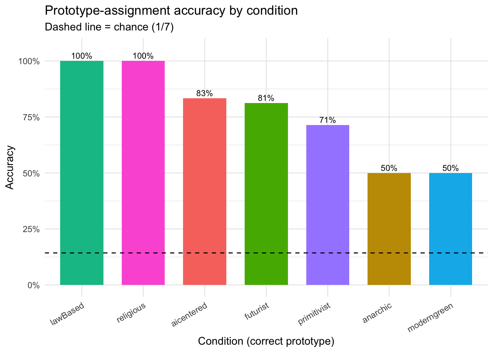
# ---- Save plot ----
ggsave(
filename = file.path(output_root, "prototype_accuracy_by_condition.png"),
plot = p_proto_acc,
width = 8, height = 5, dpi = 300, bg = "white"
)# ---- Confusion matrix: rows = correct (condition), cols = chosen ----
conf_df <- proto_df %>%
filter(!is.na(correct_prototype), !is.na(chosen_prototype)) %>%
count(correct_prototype, chosen_prototype, .drop = FALSE) %>%
group_by(correct_prototype) %>%
mutate(prop = n / sum(n)) %>%
ungroup()
# Wide table
conf_wide_n <- conf_df %>%
select(correct_prototype, chosen_prototype, n) %>%
pivot_wider(names_from = chosen_prototype, values_from = n, values_fill = 0)
DT::datatable(
conf_wide_n,
caption = "Confusion matrix (counts): rows = correct prototype, columns = chosen prototype",
options = list(pageLength = 10, scrollX = TRUE)
)# ---- Heatmap of proportions ----
p_proto_confmat <- ggplot(conf_df,
aes(x = chosen_prototype, y = correct_prototype, fill = prop)) +
geom_tile(color = "white") +
geom_text(aes(label = ifelse(prop > 0,
scales::percent(prop, accuracy = 1), "")),
size = 3) +
scale_fill_gradient(low = "#f7fbff", high = "#08519c",
labels = scales::percent_format(accuracy = 1)) +
labs(x = "Chosen prototype", y = "Correct prototype",
fill = "Row %",
title = "Confusion matrix: prototype assignments") +
theme_minimal() +
theme(axis.text.x = element_text(angle = 30, hjust = 1))
p_proto_confmat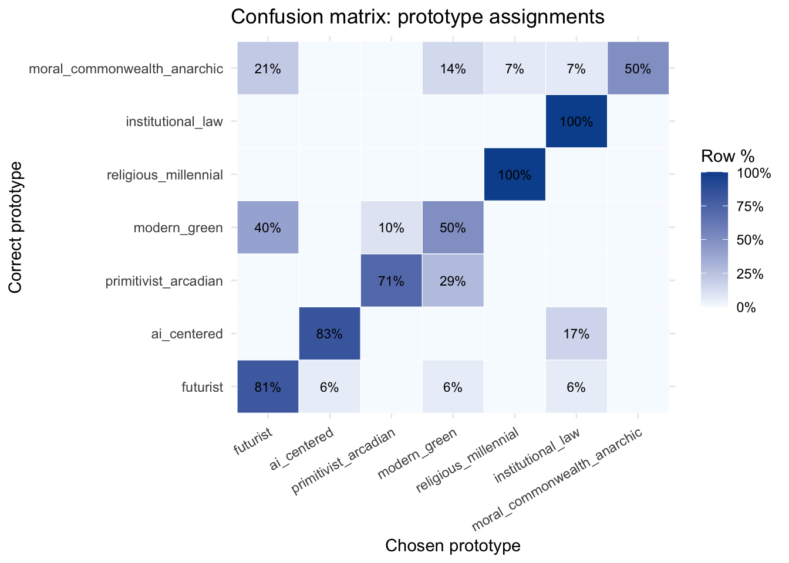
# ---- Save plot ----
ggsave(
filename = file.path(output_root, "prototype_confusion_matrix.png"),
plot = p_proto_confmat,
width = 8, height = 6, dpi = 300, bg = "white"
)9 Descriptive statistics dependent variables
9.1 descriptive mean differences
assoc_cols <- c("assoc1_valence", "assoc2_valence", "assoc3_valence", "assoc4_valence", "assoc5_valence")
attr_cols <- paste0("attributesFutureSociety-", 1:8)
clean_complete <- dat_ques %>%
mutate(
assoc_valence_mean = rowMeans(select(., all_of(assoc_cols)), na.rm = TRUE),
attributes_mean = rowMeans(select(., all_of(attr_cols)), na.rm = TRUE)
)
analysis_df <- clean_complete %>%
select(PROLIFIC_PID, condition_FutureSociety, assoc_valence_mean, attributes_mean, all_of(attr_cols)) %>%
drop_na(assoc_valence_mean, attributes_mean, condition_FutureSociety)
mean_summary <- analysis_df %>%
pivot_longer(
cols = c(assoc_valence_mean, attributes_mean),
names_to = "measure",
values_to = "value"
) %>%
group_by(condition_FutureSociety, measure) %>%
summarise(
mean = mean(value, na.rm = TRUE),
sd = sd(value, na.rm = TRUE),
n = dplyr::n(),
se = sd / sqrt(n),
.groups = "drop"
) %>%
mutate(
measure = recode(
measure,
assoc_valence_mean = "Association Valence Mean",
attributes_mean = "Attributes Mean"
)
)
ggplot(mean_summary, aes(x = condition_FutureSociety, y = mean, fill = measure)) +
geom_col(position = position_dodge(width = 0.8), width = 0.7) +
geom_errorbar(
aes(ymin = mean - se, ymax = mean + se),
position = position_dodge(width = 0.8),
width = 0.2
) +
labs(x = "Condition", y = "Mean", fill = "Measure") +
theme_minimal()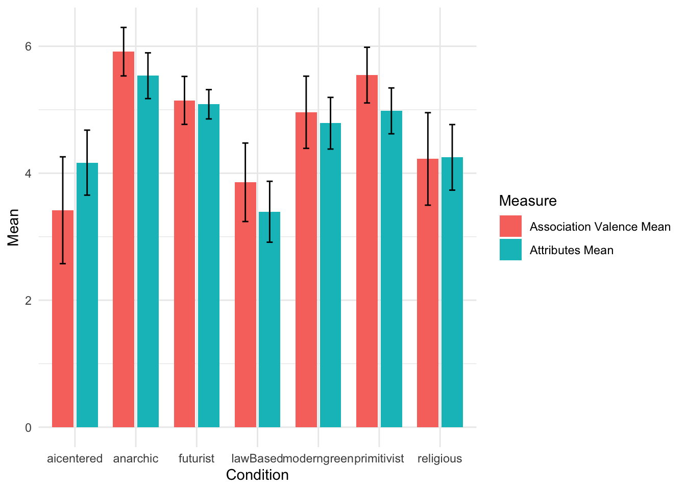
anova_assoc <- afex::aov_ez(
id = "PROLIFIC_PID",
dv = "assoc_valence_mean",
between = "condition_FutureSociety",
data = analysis_df
)Contrasts set to contr.sum for the following variables: condition_FutureSocietyanova_attr <- afex::aov_ez(
id = "PROLIFIC_PID",
dv = "attributes_mean",
between = "condition_FutureSociety",
data = analysis_df
)Contrasts set to contr.sum for the following variables: condition_FutureSocietysummary(anova_assoc)Anova Table (Type 3 tests)
Response: assoc_valence_mean
num Df den Df MSE F ges Pr(>F)
condition_FutureSociety 6 61 2.7046 2.6343 0.20579 0.02451 *
---
Signif. codes: 0 '***' 0.001 '**' 0.01 '*' 0.05 '.' 0.1 ' ' 1summary(anova_attr)Anova Table (Type 3 tests)
Response: attributes_mean
num Df den Df MSE F ges Pr(>F)
condition_FutureSociety 6 61 1.4635 3.1599 0.23711 0.009164 **
---
Signif. codes: 0 '***' 0.001 '**' 0.01 '*' 0.05 '.' 0.1 ' ' 1attr_labels <- c(
"1" = "Utopian",
"2" = "Desirable",
"3" = "Ideal",
"4" = "Beneficial for the greater good",
"5" = "Imaginative",
"6" = "Innovative",
"7" = "Creative",
"8" = "Possible"
)
attr_long <- analysis_df %>%
pivot_longer(
cols = all_of(attr_cols),
names_to = "item",
values_to = "value"
) %>%
mutate(
item_num = stringr::str_extract(item, "[0-9]+"),
item_label = recode(item_num, !!!attr_labels)
)
attr_effects <- attr_long %>%
filter(!is.na(value)) %>%
group_by(item_label) %>%
summarise(
eta_sq = {
fit <- aov(value ~ condition_FutureSociety)
ss <- summary(fit)[[1]]
ss_between <- ss["condition_FutureSociety", "Sum Sq"]
ss_total <- sum(ss[, "Sum Sq"])
if (is.na(ss_between) || is.na(ss_total) || ss_total == 0) NA_real_ else ss_between / ss_total
},
.groups = "drop"
) %>%
mutate(
eta_label = ifelse(is.na(eta_sq), "eta^2=NA", paste0("eta^2=", round(eta_sq, 2)))
)
attr_effects_table <- attr_effects %>%
arrange(desc(eta_sq))
attr_effects_table# A tibble: 8 × 3
item_label eta_sq eta_label
<chr> <dbl> <chr>
1 Innovative 0.251 eta^2=0.25
2 Desirable 0.227 eta^2=0.23
3 Ideal 0.220 eta^2=0.22
4 Utopian 0.208 eta^2=0.21
5 Beneficial for the greater good 0.176 eta^2=0.18
6 Creative 0.169 eta^2=0.17
7 Imaginative 0.159 eta^2=0.16
8 Possible 0.0144 eta^2=0.01item_order <- attr_effects %>%
mutate(eta_order = ifelse(is.na(eta_sq), -Inf, eta_sq)) %>%
arrange(desc(eta_order)) %>%
pull(item_label)
label_order <- attr_effects %>%
mutate(eta_order = ifelse(is.na(eta_sq), -Inf, eta_sq)) %>%
arrange(desc(eta_order)) %>%
mutate(facet_label = paste0(item_label, "\n", eta_label)) %>%
pull(facet_label)
attr_summary <- attr_long %>%
group_by(condition_FutureSociety, item_label) %>%
summarise(
mean = mean(value, na.rm = TRUE),
sd = sd(value, na.rm = TRUE),
n = dplyr::n(),
se = sd / sqrt(n),
.groups = "drop"
) %>%
left_join(attr_effects %>% select(item_label, eta_label), by = "item_label") %>%
mutate(
item_label = factor(item_label, levels = item_order),
facet_label = factor(paste0(item_label, "\n", eta_label), levels = label_order)
)
condition_order <- analysis_df %>%
distinct(condition_FutureSociety) %>%
arrange(condition_FutureSociety) %>%
pull(condition_FutureSociety)
attr_summary <- attr_summary %>%
mutate(condition_FutureSociety = factor(condition_FutureSociety, levels = condition_order))
ggplot(attr_summary, aes(x = condition_FutureSociety, y = mean, fill = condition_FutureSociety)) +
geom_col(width = 0.7) +
geom_errorbar(aes(ymin = mean - se, ymax = mean + se), width = 0.2) +
geom_text(aes(label = round(mean, 2)), vjust = -0.3, size = 3) +
facet_wrap(~ facet_label, ncol = 4) +
labs(x = "Condition", y = "Mean", fill = "Condition") +
theme_minimal() +
theme(legend.position = "bottom", axis.text.x = element_text(angle = 30, hjust = 1))
tmp <- clean_complete[, str_subset(string = colnames(clean_complete), pattern = "attri.*[1-9]")]
psych::corPlot(r = cor(tmp, use = "pairwise"))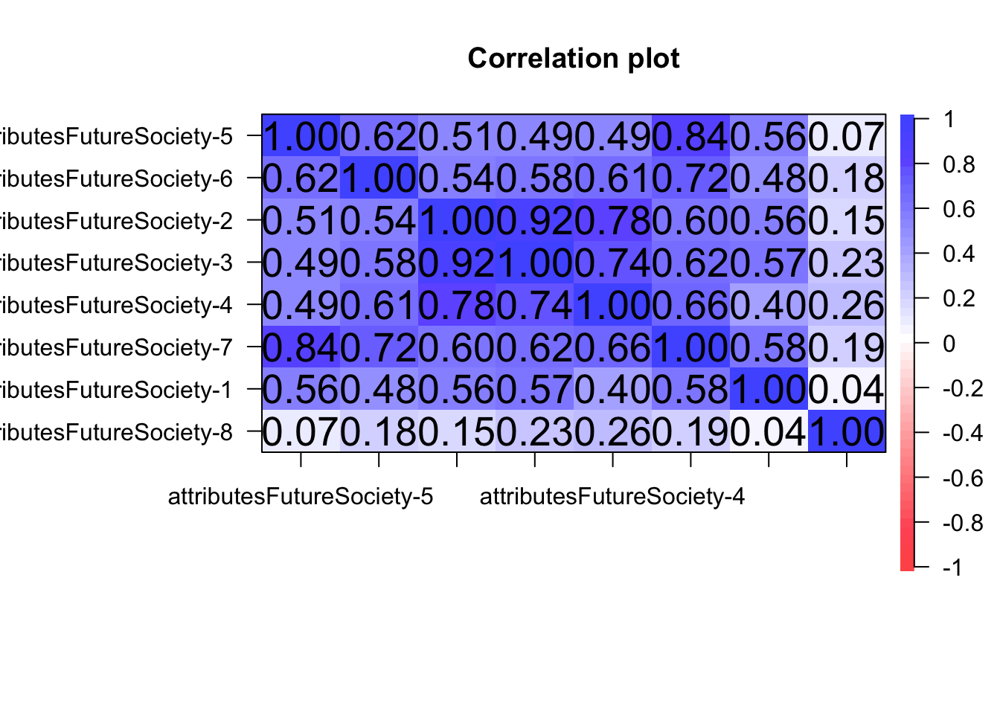
hist(clean_complete$`attributesFutureSociety-8`)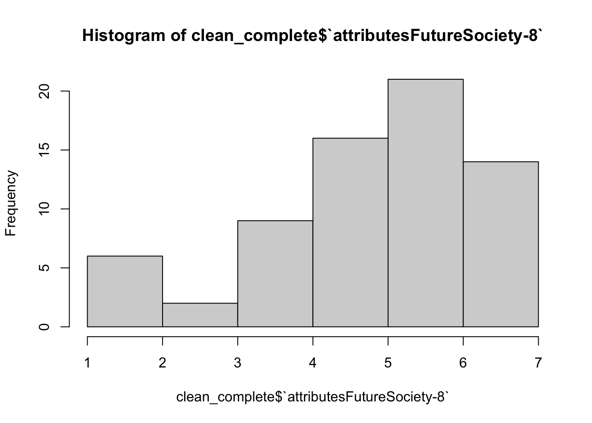
hist(clean_complete$`attributesFutureSociety-4`)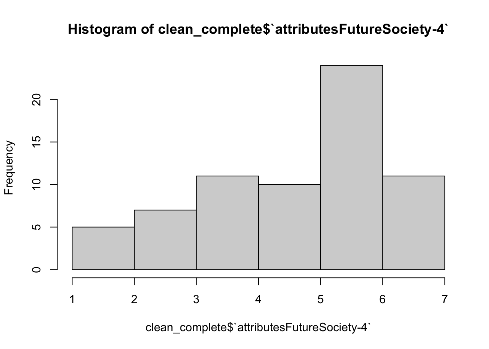
tmp_efa <- psych::fa.parallel(x = tmp)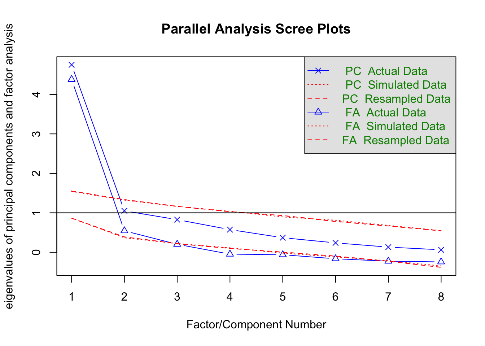
Parallel analysis suggests that the number of factors = 2 and the number of components = 1 tmp_fa <- psych::fa(r = cor(tmp, use = "pairwise"), nfactors = 2, n.obs = nrow(tmp))Loading required namespace: GPArotationtmp_faFactor Analysis using method = minres
Call: psych::fa(r = cor(tmp, use = "pairwise"), nfactors = 2, n.obs = nrow(tmp))
Standardized loadings (pattern matrix) based upon correlation matrix
MR1 MR2 h2 u2 com
attributesFutureSociety-5 -0.10 0.95 0.793 0.207 1.0
attributesFutureSociety-6 0.25 0.57 0.576 0.424 1.4
attributesFutureSociety-2 0.97 -0.03 0.911 0.089 1.0
attributesFutureSociety-3 0.96 -0.01 0.917 0.083 1.0
attributesFutureSociety-4 0.68 0.18 0.661 0.339 1.1
attributesFutureSociety-7 0.07 0.91 0.914 0.086 1.0
attributesFutureSociety-1 0.27 0.43 0.412 0.588 1.7
attributesFutureSociety-8 0.23 -0.01 0.052 0.948 1.0
MR1 MR2
SS loadings 2.75 2.49
Proportion Var 0.34 0.31
Cumulative Var 0.34 0.65
Proportion Explained 0.52 0.48
Cumulative Proportion 0.52 1.00
With factor correlations of
MR1 MR2
MR1 1.00 0.65
MR2 0.65 1.00
Mean item complexity = 1.1
Test of the hypothesis that 2 factors are sufficient.
df null model = 28 with the objective function = 6.38 with Chi Square = 411.24
df of the model are 13 and the objective function was 0.41
The root mean square of the residuals (RMSR) is 0.03
The df corrected root mean square of the residuals is 0.04
The harmonic n.obs is 69 with the empirical chi square 3.16 with prob < 1
The total n.obs was 69 with Likelihood Chi Square = 25.81 with prob < 0.018
Tucker Lewis Index of factoring reliability = 0.926
RMSEA index = 0.119 and the 90 % confidence intervals are 0.048 0.188
BIC = -29.23
Fit based upon off diagonal values = 1
Measures of factor score adequacy
MR1 MR2
Correlation of (regression) scores with factors 0.94 0.92
Multiple R square of scores with factors 0.87 0.84
Minimum correlation of possible factor scores 0.75 0.68